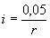

Система нормативных документов в строительстве
СТРОИТЕЛЬНЫЕ
НОРМЫ И ПРАВИЛА
РОССИЙСКОЙ ФЕДЕРАЦИИ
ТЕПЛОВЫЕ СЕТИ
СНиП 41-02-2003
ГОСУДАРСТВЕННЫЙ
КОМИТЕТ РОССИЙСКОЙ ФЕДЕРАЦИИ
ПО СТРОИТЕЛЬСТВУ И ЖИЛИЩНО-КОММУНАЛЬНОМУ КОМПЛЕКСУ
(ГОССТРОЙ РОССИИ)
Москва
2004
ПРЕДИСЛОВИЕ
1 РАЗРАБОТАНЫ ОАО «Объединение ВНИПИэнергопром», Пермским государственным техническим университетом, АО «Теплопроект» с участием Ассоциации разработчиков и производителей средств противокоррозионной защиты для топливно-энергетического комплекса, Ассоциации производителей и потребителей трубопроводов с индустриальной полимерной изоляцией, ОАО «Фирма ОРГРЭС», ОАО «Всероссийский теплотехнический институт», «СевЗапВНИПИэнергопром», АОЗТ «Корпорация ТВЭЛ», Мосгорэкспертизы, ОАО «Моспроект», ГУП «Мосинжпроект», ЗАО НТП «Трубопровод», ЗАО «Роскоммунэнерго», ОАО «Ленгазтеплострой», Иркутского государственного технического университета, ЗАО «Изоляционный завод», Тюменской академии строительства и архитектуры
ВНЕСЕНЫ Управлением технического нормирования, стандартизации и сертификации в строительстве и ЖКХ Госстроя России
2 ПРИНЯТЫ И ВВЕДЕНЫ В ДЕЙСТВИЕ с 1 сентября 2003 г. постановлением Госстроя России от 24.06.2003 г. № 110
3 ВЗАМЕН СНиП 2.04.07-86*
СОДЕРЖАНИЕ
Настоящие строительные нормы и правила устанавливают комплекс обязательных нормативных требований по проектированию тепловых сетей, сооружений на тепловых сетях во взаимосвязи со всеми элементами систем централизованного теплоснабжения в части их взаимодействия в едином технологическом процессе производства, распределения, транспортирования и потребления тепловой энергии, рационального использования топливно-энергетических ресурсов.
Установлены требования по безопасности, надежности, а также живучести систем теплоснабжения.
При разработке СНиП использованы нормативные материалы ведущих российских и зарубежных компаний, учтен 17-летний опыт применения действующих норм проектными и эксплуатирующими организациями России.
В строительных нормах и правилах впервые:
введены нормы экологической и эксплуатационной безопасности, готовности (качества) теплоснабжения; расширено применение критерия вероятности безотказной работы;
сформулированы принципы и требования обеспечения живучести в нерасчетных (экстремальных) условиях, уточнены признаки систем централизованного теплоснабжения;
введены нормы применения при проектировании тепловых сетей критериев надежности;
даны критерии выбора теплоизоляционных конструкций с учетом противопожарной безопасности.
В разработке СНиП приняли участие: канд. техн. наук Я.А. Ковылянский, А.И. Коротков, канд. техн. наук Г.Х. Умеркин, А.А. Шереметова, Л.И. Жуковская, Л.В. Макарова, В. И. Журина, канд. техн. наук Б.М. Красовский, канд. техн. наук А.В. Гришкова, канд. техн. наук Т.Н. Романова, канд. техн. наук Б.М. Шойхет, Л. В. Ставрицкая, д-р техн. наук А.П. Акользин, канд. техн. наук И.Л. Майзель, Е.М. Шмырев, Л.П. Канина, Л.Д. Сатанов, P.M. Соколов, д-р техн. наук Ю.В. Балабан-Ирменин, А.И. Кравцов, Ш.Н. Абайбуров, В.Н. Симонов, канд. техн. наук В.И. Ливчак, A.В. Фишер, Ю.У. Юнусов, Н.Г. Шевченко, канд. техн. наук В.Я. Магалиф, А.А. Хандриков, Л.Е. Любецкий, канд. техн. наук Р.Л. Ермаков, B.C. Вотинцев, Т.Ф. Миронова, д-р техн. наук А.Ф. Шаповал, В.А. Глухарев, В.П. Бовбель, Л.С. Васильева.
СНиП 41-02-2003
СТРОИТЕЛЬНЫЕ НОРМЫ И ПРАВИЛА РОССИЙСКОЙ ФЕДЕРАЦИИ
ТЕПЛОВЫЕ СЕТИ
THERMAL NETWORKS
Дата введения 2003-09-01
Настоящие нормы и правила распространяются на тепловые сети (со всеми сопутствующими конструкциями) от выходных запорных задвижек (исключая их) коллекторов источника теплоты или от наружных стен источника теплоты до выходных запорных задвижек (включая их) тепловых пунктов (узлов вводов) зданий и сооружений, транспортирующие горячую воду с температурой до 200 °С и давлением до 2,5 МПа включительно, водяной пар с температурой до 440 °С и давлением до 6,3 МПа включительно, конденсат водяного пара.
В состав тепловых сетей включены здания и сооружения тепловых сетей: насосные, тепловые пункты, павильоны, камеры, дренажные устройства и т.п.
В настоящих нормах рассматриваются системы централизованного теплоснабжения (далее - СЦТ) в части их взаимодействия в едином технологическом процессе производства, распределения, транспортирования и потребления теплоты.
Настоящие нормы и правила следует соблюдать при проектировании новых и реконструкции, модернизации и техническом перевооружении существующих тепловых сетей (включая сооружения на тепловых сетях).
Перечень нормативных документов, ссылки на которые имеются в настоящем документе, приведен в приложении А.
В настоящих нормах используются следующие термины и определения.
Система централизованного теплоснабжения - система, состоящая из одного или нескольких источников теплоты, тепловых сетей (независимо от диаметра, числа и протяженности наружных теплопроводов) и потребителей теплоты.
Вероятность безотказной работы системы [Р] - способность системы не допускать отказов, приводящих к падению температуры в отапливаемых помещениях жилых и общественных зданий ниже +12 °С, в промышленных зданиях ниже +8 °С, более числа раз, установленного нормативами.
Коэффициент готовности (качества) системы [Кг] - вероятность работоспособного состояния системы в произвольный момент времени поддерживать в отапливаемых помещениях расчетную внутреннюю температуру, кроме периодов снижения температуры, допускаемых нормативами.
Живучесть системы [Ж] - способность системы сохранять свою работоспособность в аварийных (экстремальных) условиях, а также после длительных (более 54 ч) остановов.
Срок службы тепловых сетей - период времени в календарных годах со дня ввода в эксплуатацию, по истечении которого следует провести экспертное обследование технического состояния трубопровода с целью определения допустимости, параметров и условий дальнейшей эксплуатации трубопровода или необходимости его демонтажа.
4.1 Тепловые сети подразделяются на магистральные, распределительные, квартальные и ответвления от магистральных и распределительных тепловых сетей к отдельным зданиям и сооружениям. Разделение тепловых сетей устанавливается проектом или эксплуатационной организацией.
4.2 Потребители теплоты по надежности теплоснабжения делятся на три категории:
Первая категория - потребители, не допускающие перерывов в подаче расчетного количества теплоты и снижения температуры воздуха в помещениях ниже предусмотренных ГОСТ 30494.
Например, больницы, родильные дома, детские дошкольные учреждения с круглосуточным пребыванием детей, картинные галереи, химические и специальные производства, шахты и т.п.
Вторая категория - потребители, допускающие снижение температуры в отапливаемых помещениях на период ликвидации аварии, но не более 54 ч:
жилых и общественных зданий до 12 °С;
промышленных зданий до 8 °С.
Третья категория - остальные потребители.
5.1 Решения по перспективному развитию систем теплоснабжения населенных пунктов, промышленных узлов, групп промышленных предприятий, районов и других административно-территориальных образований, а также отдельных СЦТ следует разрабатывать в схемах теплоснабжения. При разработке схем теплоснабжения расчетные тепловые нагрузки определяются:
а) для существующей застройки населенных пунктов и действующих промышленных предприятий - по проектам с уточнением по фактическим тепловым нагрузкам;
б) для намечаемых к строительству промышленных предприятий - по укрупненным нормам развития основного (профильного) производства или проектам аналогичных производств;
в) для намечаемых к застройке жилых районов - по укрупненным показателям плотности размещения тепловых нагрузок или по удельным тепловым характеристикам зданий и сооружений согласно генеральным планам застройки районов населенного пункта.
5.2 Расчетные тепловые нагрузки при проектировании тепловых сетей определяются по данным конкретных проектов нового строительства, а существующей - по фактическим тепловым нагрузкам. Допускается при отсутствии данных руководствоваться указаниями 5.1. Средние нагрузки на горячее водоснабжение отдельных зданий допускается определять по СНиП 2.04.01.
5.3 Расчетные потери теплоты в тепловых сетях следует определять как сумму тепловых потерь через изолированные поверхности трубопроводов и величины среднегодовых потерь теплоносителя.
5.4 При авариях (отказах) на источнике теплоты на его выходных коллекторах в течение всего ремонтно-восстановительного периода должны обеспечиваться:
подача 100 % необходимой теплоты потребителям первой категории (если иные режимы не предусмотрены договором);
подача теплоты на отопление и вентиляцию жилищно-коммунальным и промышленным потребителям второй и третьей категорий в размерах, указанных в таблице 1;
заданный потребителем аварийный режим расхода пара и технологической горячей воды;
заданный потребителем аварийный тепловой режим работы неотключаемых вентиляционных систем;
Таблица 1
|
Расчетная температура наружного воздуха для проектирования отопления tо, °С |
|||||
|
минус 10 |
минус 20 |
минус 30 |
минус 40 |
минус 50 |
|
|
Допустимое снижение подачи теплоты, %, до |
78 |
84 |
87 |
89 |
91 |
|
Примечание - Таблица соответствует температуре наружного воздуха наиболее холодной пятидневки обеспеченностью 0,92. |
|||||
среднесуточный расход теплоты за отопительный период на горячее водоснабжение (при невозможности его отключения).
5.5 При совместной работе нескольких источников теплоты на единую тепловую сеть района (города) должно предусматриваться взаимное резервирование источников теплоты, обеспечивающее аварийный режим по 5.4.
6.1 Выбор варианта схемы теплоснабжения объекта: системы централизованного теплоснабжения от котельных, крупных и малых тепловых и атомных электростанций (ТЭЦ, ТЭС, АЭС) либо от источников децентрализованного теплоснабжения (ДЦТ) - автономных, крышных котельных, от квартирных теплогенераторов производится путем технико-экономического сравнения вариантов.
Принятая к разработке в проекте схема теплоснабжения должна обеспечивать:
нормативный уровень теплоэнергосбережения;
нормативный уровень надежности, определяемый тремя критериями: вероятностью безотказной работы, готовностью (качеством) теплоснабжения и живучестью;
требования экологии;
безопасность эксплуатации.
6.2 Функционирование тепловых сетей и СЦТ в целом не должно приводить:
а) к недопустимой концентрации в процессе эксплуатации токсичных и вредных для населения, ремонтно-эксплуатационного персонала и окружающей среды веществ в тоннелях, каналах, камерах, помещениях и других сооружениях, в атмосфере, с учетом способности атмосферы к самоочищению в конкретном жилом квартале, микрорайоне, населенном пункте и т. д.;
б) к стойкому нарушению естественного (природного) теплового режима растительного покрова (травы, кустарников, деревьев), под которым прокладываются теплопроводы.
6.3 Тепловые сети, независимо от способа прокладки и системы теплоснабжения, не должны проходить по территории кладбищ, свалок, скотомогильников, мест захоронения радиоактивных отходов, полей орошения, полей фильтрации и других участков, представляющих опасность химического, биологического и радиоактивного загрязнения теплоносителя.
Технологические аппараты промышленных предприятий, от которых могут поступать в тепловые сети вредные вещества, должны присоединяться к тепловым сетям через водоподогреватель с дополнительным промежуточным циркуляционным контуром между таким аппаратом и водоподогревателем при обеспечении давления в промежуточном контуре меньше, чем в тепловой сети. При этом следует предусматривать установку пробоотборных точек для контроля вредных примесей.
Системы горячего водоснабжения потребителей к паровым сетям должны присоединяться через пароводяные водоподогреватели.
6.4 Безопасная эксплуатация тепловых сетей должна обеспечиваться путем разработки в проектах мер, исключающих:
контакт людей непосредственно с горячей водой или с горячими поверхностями трубопроводов (и оборудования) при температурах теплоносителя более 75 °С;
поступление теплоносителя в системы теплоснабжения с температурами выше определяемых нормами безопасности;
снижение при отказах СЦТ температуры воздуха в жилых и производственных помещениях потребителей второй и третьей категорий ниже допустимых величин (4.2);
слив сетевой воды в непредусмотренных проектом местах.
6.5 Температура на поверхности теплоизоляционной конструкции теплопроводов, арматуры и оборудования не должна превышать:
при прокладке теплопроводов в подвалах зданий, технических подпольях, тоннелях и проходных каналах 45 °С;
при надземной прокладке, в камерах и других местах, доступных для обслуживания, 60 °С.
6.6 Система теплоснабжения (открытая, закрытая, в том числе с отдельными сетями горячего водоснабжения, смешанная) выбирается на основе представляемого проектной организацией технико-экономического сравнения различных систем с учетом местных экологических, экономических условий и последствий от принятия того или иного решения.
6.7 Непосредственный водоразбор сетевой воды у потребителей в закрытых системах теплоснабжения не допускается.
6.8 В открытых системах теплоснабжения подключение части потребителей горячего водоснабжения через водоводяные теплообменники на тепловых пунктах абонентов (по закрытой системе) допускается как временное при условии обеспечения (сохранения) качества сетевой воды согласно требованиям действующих нормативных документов.
6.9 С атомными источниками теплоты должны проектироваться, как правило, открытые системы теплоснабжения, исключающие вероятность недопустимых концентраций радионуклидов в сетевой воде, трубопроводах, оборудовании СЦТ и в приемниках теплоты потребителей.
6.10 В составе СЦТ должны предусматриваться:
аварийно-восстановительные службы (ABC), численность персонала и техническая оснащенность которых должны обеспечивать полное восстановление теплоснабжения при отказах на тепловых сетях в сроки, указанные в таблице 2;
собственные ремонтно-эксплуатационные базы (РЭБ) - для районов тепловых сетей с объемом эксплуатации 1000 условных единиц и более. Численность персонала и техническая оснащенность РЭБ определяются с учетом состава оборудования, применяемых конструкций теплопроводов, тепловой изоляции и т.д.;
механические мастерские - для участков (цехов) тепловых сетей с объемом эксплуатации менее 1000 условных единиц;
единые ремонтно-эксплуатационные базы - для тепловых сетей, которые входят в состав подразделений тепловых электростанций, районных котельных или промышленных предприятий.
Схемы тепловых сетей
6.11 Водяные тепловые сети надлежит проектировать, как правило, двухтрубными, подающими одновременно теплоту на отопление, вентиляцию, горячее водоснабжение и технологические нужды.
Многотрубные и однотрубные тепловые сети допускается применять при технико-экономическом обосновании.
Тепловые сети, транспортирующие в открытых системах теплоснабжения сетевую воду в одном направлении, при надземной прокладке допускается проектировать в однотрубном исполнении при длине транзита до 5 км. При большей протяженности и отсутствии резервной подпитки СЦТ от других источников теплоты тепловые сети должны выполняться в два (или более) параллельных теплопровода.
Самостоятельные тепловые сети для присоединения технологических потребителей теплоты следует предусматривать, если качество и параметры теплоносителя отличаются от принятых в тепловых сетях.
6.12 Схема и конфигурация тепловых сетей должны обеспечивать теплоснабжение на уровне заданных показателей надежности путем:
применения наиболее прогрессивных конструкций и технических решений;
совместной работы источников теплоты;
прокладки резервных теплопроводов;
устройства перемычек между тепловыми сетями смежных тепловых районов.
6.13 Тепловые сети могут быть кольцевыми и тупиковыми, резервированными и нерезервированными.
Число и места размещения резервных трубопроводных соединений между смежными теплопроводами следует определять по критерию вероятности безотказной работы.
6.14 Системы отопления и вентиляции потребителей должны присоединяться к двухтрубным водяным тепловым сетям непосредственно по зависимой схеме присоединения.
По независимой схеме, предусматривающей установку в тепловых пунктах водоподогревателей, допускается присоединять при обосновании системы отопления и вентиляции зданий 12 этажей и выше и других потребителей, если независимое присоединение обусловлено гидравлическим режимом работы системы.
6.15 Качество исходной воды для открытых и закрытых систем теплоснабжения должно отвечать требованиям СанПиН 2.1.4.1074 и правилам технической эксплуатации электрических станций и сетей Минэнерго России.
Для закрытых систем теплоснабжения при наличии термической деаэрации допускается использовать техническую воду.
6.16 Расчетный часовой расход воды для определения производительности водоподготовки и соответствующего оборудования для подпитки системы теплоснабжения следует принимать:
в закрытых системах теплоснабжения - 0,75 % фактического объема воды в трубопроводах тепловых сетей и присоединенных к ним системах отопления и вентиляции зданий. При этом для участков тепловых сетей длиной более 5 км от источников теплоты без распределения теплоты расчетный расход воды следует принимать равным 0,5 % объема воды в этих трубопроводах;
в открытых системах теплоснабжения - равным расчетному среднему расходу воды на горячее водоснабжение с коэффициентом 1,2 плюс 0,75 % фактического объема воды в трубопроводах тепловых сетей и присоединенных к ним системах отопления, вентиляции и горячего водоснабжения зданий. При этом для участков тепловых сетей длиной более 5 км от источников теплоты без распределения теплоты расчетный расход воды следует принимать равным 0,5 % объема воды в этих трубопроводах;
для отдельных тепловых сетей горячего водоснабжения при наличии баков-аккумуляторов - равным расчетному среднему расходу воды на горячее водоснабжение с коэффициентом 1,2; при отсутствии баков - по максимальному расходу воды на горячее водоснабжение плюс (в обоих случаях) 0,75 % фактического объема воды в трубопроводах сетей и присоединенных к ним системах горячего водоснабжения зданий.
6.17 Для открытых и закрытых систем теплоснабжения должна предусматриваться дополнительно аварийная подпитка химически не обработанной и недеаэрированной водой, расход которой принимается в количестве 2 % объема воды в трубопроводах тепловых сетей и присоединенных к ним системах отопления, вентиляции и в системах горячего водоснабжения для открытых систем теплоснабжения. При наличии нескольких отдельных тепловых сетей, отходящих от коллектора теплоисточника, аварийную подпитку допускается определять только для одной наибольшей по объему тепловой сети. Для открытых систем теплоснабжения аварийная подпитка должна обеспечиваться только из систем хозяйственно-питьевого водоснабжения.
6.18 Объем воды в системах теплоснабжения при отсутствии данных по фактическим объемам воды допускается принимать равным 65 м3 на 1 МВт расчетной тепловой нагрузки при закрытой системе теплоснабжения, 70 м3 на 1 МВт - при открытой системе и 30 м3 на 1 МВт средней нагрузки - при отдельных сетях горячего водоснабжения.
6.19 Размещение баков-аккумуляторов горячей воды возможно как на источнике теплоты, так и в районах теплопотребления. При этом на источнике теплоты должны предусматриваться баки-аккумуляторы вместимостью не менее 25 % общей расчетной вместимости баков. Внутренняя поверхность баков должна быть защищена от коррозии, а вода в них - от аэрации, при этом должно предусматриваться непрерывное обновление воды в баках.
6.20 Для открытых систем теплоснабжения, а также при отдельных тепловых сетях на горячее водоснабжение должны предусматриваться баки-аккумуляторы химически обработанной и деаэрированной подпиточной воды, расчетной вместимостью равной десятикратной величине среднечасового расхода воды на горячее водоснабжение.
6.21 В закрытых системах теплоснабжения на источниках теплоты мощностью 100 МВт и более следует предусматривать установку баков запаса химически обработанной и деаэрированной подпиточной воды вместимостью 3 % объема воды в системе теплоснабжения, при этом должно обеспечиваться обновление воды в баках.
Число баков независимо от системы теплоснабжения принимается не менее двух по 50 % рабочего объема.
6.22 В СЦТ с теплопроводами любой протяженности от источника теплоты до районов теплопотребления допускается использование теплопроводов в качестве аккумулирующих емкостей.
6.23 При расположении группы баков-аккумуляторов вне территории источников теплоты она должна быть ограждена общим валом высотой не менее 0,5 м. Обвалованная территория должна вмещать объем воды в наибольшем баке и иметь отвод воды в канализацию.
6.24 Устанавливать баки-аккумуляторы горячей воды в жилых кварталах не допускается. Расстояние от баков-аккумуляторов горячей воды до границы жилых кварталов должно быть не менее 30 м. При этом на грунтах 1-го типа просадочности расстояние, кроме того, должно быть не менее 1,5 толщины слоя просадочного грунта.
При размещении баков-аккумуляторов вне территории источников теплоты следует предусматривать их ограждение высотой не менее 2,5 м для исключения доступа посторонних лиц к бакам.
6.25 Баки-аккумуляторы горячей воды у потребителей должны предусматриваться в системах горячего водоснабжения промышленных предприятий для выравнивания сменного графика потребления воды объектами, имеющими сосредоточенные кратковременные расходы воды на горячее водоснабжение.
Для объектов промышленных предприятий, имеющих отношение средней тепловой нагрузки на горячее водоснабжение к максимальной тепловой нагрузке на отопление меньше 0,2, баки-аккумуляторы не устанавливаются.
6.26 Для уменьшения потерь сетевой воды и соответственно теплоты при плановых или вынужденных опорожнениях теплопроводов допускается установка в тепловых сетях специальных баков-накопителей, вместимость которых определяется объемом теплопроводов между двумя секционирующими задвижками.
Надежность
6.27 Способность проектируемых и действующих источников теплоты, тепловых сетей и в целом СЦТ обеспечивать в течение заданного времени требуемые режимы, параметры и качество теплоснабжения (отопления, вентиляции, горячего водоснабжения, а также технологических потребностей предприятий в паре и горячей воде) следует определять по трем показателям (критериям): вероятности безотказной работы [Р], коэффициенту готовности [Кг], живучести [Ж].
Расчет показателей системы с учетом надежности должен производиться для каждого потребителя.
6.28 Минимально допустимые показатели вероятности безотказной работы следует принимать для:
источника теплоты Рит = 0,97;
тепловых сетей Ртс = 0,9;
потребителя теплоты Рпт = 0,99;
СЦТ в целом Рсцт = 0,9×0,97×0,99 = 0,86.
Заказчик вправе устанавливать в техническом задании на проектирование более высокие показатели.
6.29 Для обеспечения безотказности тепловых сетей следует определять:
предельно допустимую длину нерезервированных участков теплопроводов (тупиковых, радиальных, транзитных) до каждого потребителя или теплового пункта;
места размещения резервных трубопроводных связей между радиальными теплопроводами;
достаточность диаметров выбираемых при проектировании новых или реконструируемых существующих теплопроводов для обеспечения резервной подачи теплоты потребителям при отказах;
необходимость замены на конкретных участках конструкций тепловых сетей и теплопроводов на более надежные, а также обоснованность перехода на надземную или тоннельную прокладку;
очередность ремонтов и замен теплопроводов, частично или полностью утративших свой ресурс;
необходимость проведения работ по дополнительному утеплению зданий.
6.30 Готовность системы к исправной работе следует определять по числу часов ожидания готовности: источника теплоты, тепловых сетей, потребителей теплоты, а также - числу часов нерасчетных температур наружного воздуха в данной местности.
6.31 Минимально допустимый показатель готовности СЦТ к исправной работе Кг принимается 0,97.
6.32 Для расчета показателя готовности следует определять (учитывать):
готовность СЦТ к отопительному сезону;
достаточность установленной тепловой мощности источника теплоты для обеспечения исправного функционирования СЦТ при нерасчетных похолоданиях;
способность тепловых сетей обеспечить исправное функционирование СЦТ при нерасчетных похолоданиях;
организационные и технические меры, необходимые для обеспечения исправного функционирования СЦТ на уровне заданной готовности;
максимально допустимое число часов готовности для источника теплоты;
температуру наружного воздуха, при которой обеспечивается заданная внутренняя температура воздуха.
Резервирование
6.33 Следует предусматривать следующие способы резервирования:
применение на источниках теплоты рациональных тепловых схем, обеспечивающих заданный уровень готовности энергетического оборудования;
установку на источнике теплоты необходимого резервного оборудования;
организацию совместной работы нескольких источников теплоты на единую систему транспортирования теплоты;
резервирование тепловых сетей смежных районов;
устройство резервных насосных и трубопроводных связей;
установку баков-аккумуляторов.
При подземной прокладке тепловых сетей в непроходных каналах и бесканальной прокладке величина подачи теплоты (%) для обеспечения внутренней температуры воздуха в отапливаемых помещениях не ниже 12 °С в течение ремонтно-восстановительного периода после отказа должна приниматься по таблице 2.
6.34 Участки надземной прокладки протяженностью до 5 км допускается не резервировать, кроме трубопроводов диаметром более 1200 мм в районах с расчетными температурами воздуха для проектирования отопления ниже минус 40 °С.
Резервирование подачи теплоты по тепловым сетям, прокладываемым в тоннелях и проходных каналах, допускается не предусматривать.
6.35 Для потребителей первой категории следует предусматривать установку местных резервных источников теплоты (стационарных или передвижных). Допускается предусматривать резервирование, обеспечивающее при отказах 100 %-ную подачу теплоты от других тепловых сетей.
6.36 Для резервирования теплоснабжения промышленных предприятий допускается предусматривать местные источники теплоты.
Таблица 2
|
Время восстановления теплоснабжения, ч |
Расчетная температура наружного воздуха для проектирования отопления tо, °С |
|||||
|
минус 10 |
минус 20 |
минус 30 |
минус 40 |
минус 50 |
||
|
Допускаемое снижение подачи теплоты, %, до |
||||||
|
300 |
15 |
32 |
50 |
60 |
59 |
64 |
|
400 |
18 |
41 |
56 |
65 |
63 |
68 |
|
500 |
22 |
49 |
63 |
70 |
69 |
73 |
|
600 |
26 |
52 |
68 |
75 |
73 |
77 |
|
700 |
29 |
59 |
70 |
76 |
75 |
78 |
|
800-1000 |
40 |
66 |
75 |
80 |
79 |
82 |
|
1200-1400 |
До 54 |
71 |
79 |
83 |
82 |
85 |
Живучесть
6.37 Минимальная подача теплоты по теплопроводам, расположенным в неотапливаемых помещениях и снаружи, в подъездах, лестничных клетках, на чердаках и т.п., должна быть достаточной для поддержания температуры воды в течение всего ремонтно-восстановительного периода после отказа не ниже 3 °С.
6.38 В проектах должны быть разработаны мероприятия по обеспечению живучести элементов систем теплоснабжения, находящихся в зонах возможных воздействий отрицательных температур, в том числе:
организация локальной циркуляции сетевой воды в тепловых сетях до и после ЦТП;
спуск сетевой воды из систем теплоиспользования у потребителей, распределительных тепловых сетей, транзитных и магистральных теплопроводов;
прогрев и заполнение тепловых сетей и систем теплоиспользования потребителей во время и после окончания ремонтно-восстановительных работ;
проверка прочности элементов тепловых сетей на достаточность запаса прочности оборудования и компенсирующих устройств;
обеспечение необходимого пригруза бесканально проложенных теплопроводов при возможных затоплениях;
временное использование, при возможности, передвижных источников теплоты.
Сбор и возврат конденсата
6.39 Системы сбора и возврата конденсата источнику теплоты следует предусматривать закрытыми, при этом избыточное давление в сборных баках конденсата должно быть не менее 0,005 МПа.
Открытые системы сбора и возврата конденсата допускается предусматривать при количестве возвращаемого конденсата менее 10 т/ч и расстоянии до источника теплоты до 0,5 км.
6.40 Возврат конденсата от конденсатоотводчиков по общей сети допускается применять при разнице в давлении пара перед конденсатоотводчиками не более 0,3 МПа.
При возврате конденсата насосами число насосов, подающих конденсат в общую сеть, не ограничивается.
Параллельная работа насосов и конденсатоотводчиков, отводящих конденсат от потребителей пара на общую конденсатную сеть, не допускается.
6.41 Напорные конденсатопроводы следует рассчитывать по максимальному часовому расходу конденсата, исходя из условий работы трубопроводов полным сечением при всех режимах возврата конденсата и предохранения их от опорожнения при перерывах в подаче конденсата. Давление в сети конденсатопроводов при всех режимах должно приниматься избыточным.
Конденсатопроводы от конденсатоотводчиков до сборных баков конденсата следует рассчитывать с учетом образования пароводяной смеси.
6.42 Удельные потери давления на трение в конденсатопроводах после насосов надлежит принимать не более 100 Па/м при эквивалентной шероховатости внутренней поверхности конденсатопроводов 0,001 м.
6.43 Вместимость сборных баков конденсата, устанавливаемых в тепловых сетях, на тепловых пунктах потребителей должна приниматься не менее 10-минутного максимального расхода конденсата. Число баков при круглогодичной работе следует принимать не менее двух, вместимостью по 50 % каждый. При сезонной работе и менее 3 месяцев в году, а также при максимальном расходе конденсата до 5 т/ч допускается установка одного бака.
При контроле качества конденсата число баков следует принимать, как правило, не менее трех с вместимостью каждого, обеспечивающей по времени проведение анализа конденсата по всем необходимым показателям, но не менее 30-минутного максимального поступления конденсата.
6.44 Подача (производительность) насосов для перекачки конденсата должна определяться по максимальному часовому расходу конденсата.
Напор насоса должен определяться по величине потери давления в конденсатопроводе с учетом высоты подъема конденсата от насосной до сборного бака и величины избыточного давления в сборных баках.
Напор насосов, подающих конденсат в общую сеть, должен определяться с учетом условий их параллельной работы при всех режимах возврата конденсата.
Число насосов в каждой насосной следует принимать не менее двух, один из которых является резервным.
6.45 Постоянный и аварийный сбросы конденсата в системы дождевой или бытовой канализации допускаются после охлаждения его до температуры 40 °С. При сбросе в систему производственной канализации с постоянными стоками конденсат допускается не охлаждать.
6.46 Возвращаемый от потребителей к источнику теплоты конденсат должен отвечать требованиям правил технической эксплуатации электрических станций и сетей Минэнерго России.
Температура возвращаемого конденсата для открытых и закрытых систем не нормируется.
6.47 В системах сбора и возврата конденсата следует предусматривать использование его теплоты для собственных нужд предприятия.
7.1 В системах централизованного теплоснабжения для отопления, вентиляции и горячего водоснабжения жилых, общественных и производственных зданий в качестве теплоносителя следует, как правило, принимать воду.
Следует также проверять возможность применения воды как теплоносителя для технологических процессов.
Применение для предприятий в качестве единого теплоносителя пара для технологических процессов, отопления, вентиляции и горячего водоснабжения допускается при технико-экономическом обосновании.
7.2 Максимальная расчетная температура сетевой воды на выходе из источника теплоты, в тепловых сетях и приемниках теплоты устанавливается на основе технико-экономических расчетов.
При наличии в закрытых системах теплоснабжения нагрузки горячего водоснабжения минимальная температура сетевой воды на выходе из источника теплоты и в тепловых сетях должна обеспечивать возможность подогрева воды, поступающей на горячее водоснабжение до нормируемого уровня.
7.3 Температура сетевой воды, возвращаемой на тепловые электростанции с комбинированной выработкой теплоты и электроэнергии, определяется технико-экономическим расчетом. Температура сетевой воды, возвращаемой к котельным, не регламентируется.
7.4 При расчете графиков температур сетевой воды в системах централизованного теплоснабжения начало и конец отопительного периода при среднесуточной температуре наружного воздуха принимаются:
8 °С в районах с расчетной температурой наружного воздуха для проектирования отопления до минус 30 °С и усредненной расчетной температурой внутреннего воздуха отапливаемых зданий 18 °С;
10 °С в районах с расчетной температурой наружного воздуха для проектирования отопления ниже минус 30 °С и усредненной расчетной температурой внутреннего воздуха отапливаемых зданий 20 °С.
Усредненная расчетная температура внутреннего воздуха отапливаемых производственных зданий 16 °С.
7.5 При отсутствии у приемников теплоты в системах отопления и вентиляции автоматических индивидуальных устройств регулирования температуры внутри помещений следует применять в тепловых сетях регулирование температуры теплоносителя:
центральное качественное по нагрузке отопления, по совместной нагрузке отопления, вентиляции и горячего водоснабжения - путем изменения на источнике теплоты температуры теплоносителя в зависимости от температуры наружного воздуха;
центральное качественно-количественное по совместной нагрузке отопления, вентиляции и горячего водоснабжения - путем регулирования на источнике теплоты как температуры, так и расхода сетевой воды.
Центральное качественно-количественное регулирование на источнике теплоты может быть дополнено групповым количественным регулированием на тепловых пунктах преимущественно в переходный период отопительного сезона, начиная от точки излома температурного графика с учетом схем присоединения отопительных, вентиляционных установок и горячего водоснабжения, колебаний давления в системе теплоснабжения, наличия и мест размещения баков-аккумуляторов, теплоаккумулирующей способности зданий и сооружений.
7.6 При центральном качественно-количественном регулировании отпуска теплоты для подогрева воды в системах горячего водоснабжения потребителей температура воды в подающем трубопроводе должна быть:
для закрытых систем теплоснабжения - не менее 70 °С;
для открытых систем теплоснабжения - не менее 60 °С.
При центральном качественно-количественном регулировании по совместной нагрузке отопления, вентиляции и горячего водоснабжения точка излома графика температур воды в подающем и обратном трубопроводах должна приниматься при температуре наружного воздуха, соответствующей точке излома графика регулирования по нагрузке отопления.
7.7 В системах теплоснабжения, при наличии у потребителя теплоты в системах отопления и вентиляции индивидуальных устройств регулирования температуры воздуха внутри помещений количеством протекающей через приемники сетевой воды, следует применять центральное качественно-количественное регулирование, дополненное групповым количественным регулированием на тепловых пунктах с целью уменьшения колебаний гидравлических и тепловых режимов в конкретных квартальных (микрорайонных) системах в пределах, обеспечивающих качество и устойчивость теплоснабжения.
7.8 Для раздельных водяных тепловых сетей от одного источника теплоты к предприятиям и жилым районам допускается предусматривать разные графики температур теплоносителя.
7.9 В зданиях общественного и производственного назначения, для которых возможно снижение температуры воздуха в ночное и нерабочее время, следует предусматривать регулирование температуры или расхода теплоносителя в тепловых пунктах.
7.10 В жилых и общественных зданиях при отсутствии у отопительных приборов терморегулирующих клапанов следует предусматривать автоматическое регулирование по температурному графику для поддержания средней по зданию температуры внутреннего воздуха.
7.11 Не допускается применение для тепловых сетей графиков регулирования отпуска теплоты «со срезкой» по температурам.
8.1 При проектировании новых и реконструкции действующих СЦТ, а также при разработке мероприятий по повышению эксплуатационной готовности и безотказности работы всех звеньев системы расчет гидравлических режимов обязателен.
8.2 Для водяных тепловых сетей следует предусматривать следующие гидравлические режимы:
расчетный - по расчетным расходам сетевой воды;
зимний - при максимальном отборе воды на горячее водоснабжение из обратного трубопровода;
переходный - при максимальном отборе воды на горячее водоснабжение из подающего трубопровода;
летний - при максимальной нагрузке горячего водоснабжения в неотопительный период;
статический - при отсутствии циркуляции теплоносителя в тепловой сети;
аварийный.
8.3 Расход пара в паровых тепловых сетях, обеспечивающих предприятия с различными суточными режимами работы, следует определять с учетом несовпадения максимальных часовых расходов пара отдельными предприятиями.
Для паропроводов насыщенного пара в суммарном расходе должно учитываться дополнительное количество пара, конденсирующегося за счет потерь теплоты в трубопроводах.
8.4 Эквивалентную шероховатость внутренней поверхности стальных труб следует принимать:
для паровых тепловых сетей kэ = 0,0002 м;
для водяных тепловых сетей kэ = 0,0005 м;
для сетей горячего водоснабжения kэ = 0,001 м.
При применении в тепловых сетях трубопроводов из других материалов значения эквивалентных шероховатостей допускается принимать при подтверждении их фактической величины испытаниями с учетом срока эксплуатации.
8.5 Диаметры подающего и обратного трубопроводов двухтрубных водяных тепловых сетей при совместной подаче теплоты на отопление, вентиляцию и горячее водоснабжение рекомендуется принимать одинаковыми.
8.6 Наименьший внутренний диаметр труб должен приниматься в тепловых сетях не менее 32 мм, а для циркуляционных трубопроводов горячего водоснабжения - не менее 25 мм.
8.7 Статическое давление в системах теплоснабжения при теплоносителе воде должно определяться для температуры сетевой воды, равной 100 °С. Следует исключать при статических режимах недопустимое повышение давления в трубопроводах и оборудовании.
8.8 Давление воды в подающих трубопроводах водяных тепловых сетей при работе сетевых насосов должно приниматься, исходя из условий невскипания воды при ее максимальной температуре в любой точке подающего трубопровода, в оборудовании источника теплоты и в приборах систем потребителей, непосредственно присоединенных к тепловым сетям.
8.9 Давление воды в обратных трубопроводах водяных тепловых сетей при работе сетевых насосов должно быть избыточным (не менее 0,05 МПа) и на 0,1 МПа ниже допустимого давления в системах теплоиспользования потребителей.
8.10 Давление воды в обратных трубопроводах водяных тепловых сетей открытых систем теплоснабжения в неотопительный период, а также в подающем и циркуляционном трубопроводах сетей горячего водоснабжения следует принимать не менее чем на 0,05 МПа больше статического давления систем горячего водоснабжения потребителей.
8.11 Давление и температура воды на всасывающих патрубках сетевых, подпиточных, подкачивающих и смесительных насосов не должны быть ниже давления кавитации и не должны превышать допускаемых по условиям прочности конструкций насосов.
8.12 Напор сетевых насосов следует определять для отопительного и неотопительного периодов и принимать равным сумме потерь напора в установках на источнике теплоты, в подающем и обратном трубопроводах от источника теплоты до наиболее удаленного потребителя и в системе потребителя (включая потери в тепловых пунктах и насосных) при суммарных расчетных расходах воды.
Напор подкачивающих насосов на подающем и обратном трубопроводах следует определять по пьезометрическим графикам при максимальных расходах воды в трубопроводах с учетом гидравлических потерь в оборудовании и трубопроводах.
8.13 Напор подпиточных насосов должен определяться из условий поддержания в водяных тепловых сетях статического давления и проверяться для условий работы сетевых насосов в отопительный и неотопительный периоды.
Допускается предусматривать установку отдельных групп подпиточных насосов с различными напорами для отопительного, неотопительного периодов и для статического режима.
8.14 Подачу (производительность) рабочих подпиточных насосов на источнике теплоты в закрытых системах теплоснабжения следует принимать равной расходу воды на компенсацию потерь сетевой воды из тепловой сети, а в открытых системах - равной сумме максимального расхода воды на горячее водоснабжение и расхода воды на компенсацию потерь.
8.15 Напор смесительных насосов следует определять по наибольшему перепаду давлений между подающим и обратным трубопроводами.
8.16 Число насосов следует принимать:
сетевых - не менее двух, один из которых является резервным; при пяти рабочих сетевых насосах в одной группе резервный насос допускается не устанавливать;
подкачивающих и смесительных (в тепловых сетях) - не менее трех, один из которых является резервным, при этом резервный насос предусматривается независимо от числа рабочих насосов;
подпиточных - в закрытых системах теплоснабжения не менее двух, один из которых является резервным, в открытых системах - не менее трех, один из которых также является резервным;
в узлах деления водяной тепловой сети на зоны (в узлах рассечки) допускается в закрытых системах теплоснабжения устанавливать один подпиточный насос без резерва, а в открытых системах - один рабочий и один резервный.
Число насосов определяется с учетом их совместной работы на тепловую сеть.
8.17 При определении напора сетевых насосов перепад давлений на вводе двухтрубных водяных тепловых сетей в здания (при элеваторном присоединении систем отопления) следует принимать равным расчетным потерям давления на вводе и в местной системе с коэффициентом 1,5, но не менее 0,15 МПа. Рекомендуется избыточный напор гасить в тепловых пунктах зданий.
8.18 При проектировании СЦТ с расходом теплоты более 100 МВт следует определять необходимость комплексной системы защиты, предотвращающей возникновение гидравлических ударов и недопустимых давлений в оборудовании водоподогревательных установок источников теплоты, в тепловых сетях, системах теплоиспользования потребителей.
9.1 В населенных пунктах для тепловых сетей предусматривается, как правило, подземная прокладка (бесканальная, в каналах или в городских и внутриквартальных тоннелях совместно с другими инженерными сетями).
При обосновании допускается надземная прокладка тепловых сетей, кроме территорий детских и лечебных учреждений.
9.2 Прокладку тепловых сетей по территории, не подлежащей застройке вне населенных пунктов, следует предусматривать надземную на низких опорах.
Прокладка тепловых сетей по насыпям автомобильных дорог общего пользования I, II и III категорий не допускается.
9.3 При выборе трассы допускается пересечение жилых и общественных зданий транзитными водяными тепловыми сетями с диаметрами теплопроводов до 300 мм включительно при условии прокладки сетей в технических подпольях и тоннелях (высотой не менее 1,8 м) с устройством дренирующего колодца в нижней точке на выходе из здания.
В виде исключения допускается пересечение транзитными водяными тепловыми сетями диаметром 400 - 600 мм, давлением Ру £ 1,6 МПа жилых и общественных зданий при соблюдении следующих требований:
прокладка должна предусматриваться в проходных монолитных железобетонных каналах с усиленной гидроизоляцией. Концы канала должны выходить за пределы здания не менее чем на 5 м;
водовыпуски диаметром 300 мм должны осуществляться из нижних точек канала за пределами здания в ливневую канализацию;
при монтаже обязательна 100 %-ная проверка сварных швов стальных труб теплопроводов;
запорная и регулировочная арматура должна устанавливаться за пределами здания;
теплопроводы в пределах здания не должны иметь ответвлений.
Пересечение транзитными тепловыми сетями зданий и сооружений детских дошкольных, школьных и лечебно-профилактических учреждений не допускается. Прокладка тепловых сетей по территории перечисленных учреждений допускается только подземная в монолитных железобетонных каналах с гидроизоляцией. При этом устройство вентиляционных шахт, люков и выходов наружу из каналов в пределах территории учреждений не допускается, запорная арматура должна устанавливаться за пределами территории.
9.4 Прокладка тепловых сетей при рабочем давлении пара выше 2,2 МПа и температуре выше 350 °С в тоннелях совместно с другими инженерными сетями не допускается.
9.5 Уклон тепловых сетей независимо от направления движения теплоносителя и способа прокладки должен быть не менее 0,002. При катковых и шариковых опорах уклон не должен превышать

где r - радиус катка или шарика, см.
Уклон тепловых сетей к отдельным зданиям при подземной прокладке должен приниматься, как правило, от здания к ближайшей камере.
На отдельных участках (при пересечении коммуникаций, прокладке по мостам и т.п.) допускается принимать прокладку тепловых сетей без уклона.
9.6 Подземную прокладку тепловых сетей допускается предусматривать совместно с перечисленными ниже инженерными сетями:
в каналах - с водопроводами, трубопроводами сжатого воздуха давлением до 1,6 МПа, мазутопроводами, контрольными кабелями, предназначенными для обслуживания тепловых сетей;
в тоннелях - с водопроводами диаметром до 500 мм, кабелями связи, силовыми кабелями напряжением до 10 кВ, трубопроводами сжатого воздуха давлением до 1,6 МПа, трубопроводами напорной канализации.
Прокладка трубопроводов тепловых сетей в каналах и тоннелях с другими инженерными сетями, кроме указанных, не допускается.
Прокладка трубопроводов тепловых сетей должна предусматриваться в одном ряду или над другими инженерными сетями.
9.7 Расстояния по горизонтали и вертикали от наружной грани строительных конструкций каналов и тоннелей или оболочки изоляции трубопроводов при бесканальной прокладке тепловых сетей до зданий, сооружений и инженерных сетей следует принимать по приложению Б. При прокладке теплопроводов по территории промышленных предприятий - по соответствующим специализированным нормам.
9.8 Пересечение тепловыми сетями рек, автомобильных дорог, трамвайных путей, а также зданий и сооружений следует, как правило, предусматривать под прямым углом. Допускается при обосновании пересечение под меньшим углом, но не менее 45°, а сооружений метрополитена, железных дорог - не менее 60°.
9.9 Пересечение подземными тепловыми сетями трамвайных путей следует предусматривать на расстоянии от стрелок и крестовин не менее 3 м (в свету).
9.10 При подземном пересечении тепловыми сетями железных дорог наименьшие расстояния по горизонтали в свету следует принимать, м:
до стрелок и крестовин железнодорожного пути и мест присоединения отсасывающих кабелей к рельсам электрифицированных железных дорог - 10;
до стрелок и крестовин железнодорожного пути при просадочных грунтах - 20;
до мостов, труб, тоннелей и других искусственных сооружений - 30.
9.11 Прокладка тепловых сетей при пересечении железных дорог общей сети, а также рек, оврагов, открытых водостоков должна предусматриваться, как правило, надземной. При этом допускается использовать постоянные автодорожные и железнодорожные мосты.
Прокладку тепловых сетей при подземном пересечении железных, автомобильных, магистральных дорог, улиц, проездов общегородского и районного значения, а также улиц и дорог местного значения, трамвайных путей и линий метрополитена следует предусматривать:
в каналах - при возможности производства строительно-монтажных и ремонтных работ открытым способом;
в футлярах - при невозможности производства работ открытым способом, длине пересечения до 40 м;
в тоннелях - в остальных случаях, а также при заглублении от поверхности земли до верха трубопровода 2,5 м и более.
При прокладке тепловых сетей под водными преградами следует предусматривать, как правило, устройство дюкеров.
Пересечение тепловыми сетями станционных сооружений метрополитена не допускается.
При подземном пересечении тепловыми сетями линий метрополитена каналы и тоннели следует предусматривать из монолитного железобетона с гидроизоляцией.
9.12 Длину каналов, тоннелей или футляров в местах пересечений необходимо принимать в каждую сторону не менее, чем на 3 м больше размеров пересекаемых сооружений, в том числе сооружений земляного полотна железных и автомобильных дорог, с учетом таблицы Б.3.
При пересечении тепловыми сетями железных дорог общей сети, линий метрополитена, рек и водоемов следует предусматривать запорную арматуру с обеих сторон пересечения, а также устройства для спуска воды из трубопроводов тепловых сетей, каналов, тоннелей или футляров на расстоянии не более 100 м от границы пересекаемых сооружений.
9.13 При прокладке тепловых сетей в футлярах должна предусматриваться антикоррозионная защита труб тепловых сетей и футляров. В местах пересечения электрифицированных железных дорог и трамвайных путей должна предусматриваться электрохимическая защита.
Между тепловой изоляцией и футляром должен предусматриваться зазор не менее 100 мм.
9.14 В местах пересечения при подземной прокладке тепловых сетей с газопроводами не допускается прохождение газопроводов через строительные конструкции камер, непроходных каналов и тоннелей.
9.15 При пересечении тепловыми сетями сетей водопровода и канализации, расположенных над трубопроводами тепловых сетей, при расстоянии от конструкции тепловых сетей до трубопроводов пересекаемых сетей 300 мм и менее (в свету), а также при пересечении газопроводов следует предусматривать устройство футляров на трубопроводах водопровода, канализации и газа на длине 2 м по обе стороны от пересечения (в свету). На футлярах следует предусматривать защитное покрытие от коррозии.
9.16 В местах пересечения тепловых сетей при их подземной прокладке в каналах или тоннелях с газопроводами должны предусматриваться на тепловых сетях на расстоянии не более 15 м по обе стороны от газопровода устройства для отбора проб на утечку газа.
При прокладке тепловых сетей с попутным дренажом на участке пересечения с газопроводом дренажные трубы следует предусматривать без отверстий на расстоянии по 2 м в обе стороны от газопровода, с герметичной заделкой стыков.
9.17 На вводах трубопроводов тепловых сетей в здания в газифицированных районах необходимо предусматривать устройства, предотвращающие проникание воды и газа в здания, а в негазифицированных - воды.
9.18 В местах пересечения надземных тепловых сетей с воздушными линиями электропередачи и электрифицированными железными дорогами следует предусматривать заземление всех электропроводящих элементов тепловых сетей (с сопротивлением заземляющих устройств не более 10 Ом), расположенных на расстоянии по горизонтали по 5 м в каждую сторону от проводов.
9.19 Прокладка тепловых сетей вдоль бровок террас, оврагов, откосов, искусственных выемок должна предусматриваться за пределами призмы обрушения грунта от замачивания. При этом, при расположении под откосом зданий и сооружений различного назначения следует предусматривать мероприятия по отводу аварийных вод из тепловых сетей с целью недопущения затопления территории застройки.
9.20 В зоне отапливаемых пешеходных переходов, в том числе совмещенных с входами в метрополитен, следует предусматривать прокладку тепловых сетей в монолитном железобетонном канале, выходящем на 5 м за габарит переходов.
10.1 Трубы, арматуру и изделия из стали и чугуна для тепловых сетей следует принимать в соответствии с правилами устройства и безопасной эксплуатации трубопроводов пара и горячей воды ПБ 10-573 Госгортехнадзора России. Расчет стальных и чугунных трубопроводов на прочность следует выполнять по нормам расчета на прочность трубопроводов тепловых сетей РД 10-400 и РД 10-249.
10.2 Для трубопроводов тепловых сетей следует предусматривать стальные электросварные трубы или бесшовные стальные трубы.
Трубы из высокопрочного чугуна с шаровидным графитом (ВЧШГ) допускается применять для тепловых сетей при температуре воды до 150 °С и давлении до 1,6 МПа включительно.
10.3 Для трубопроводов тепловых сетей при рабочем давлении пара 0,07 МПа и ниже и температуре воды 115 °С и ниже при давлении до 1,6 МПа включительно допускается применять неметаллические трубы, если качество и характеристики этих труб удовлетворяют санитарным требованиям и соответствуют параметрам теплоносителя в тепловых сетях.
10.4 Для сетей горячего водоснабжения в закрытых системах теплоснабжения должны применяться трубы из коррозионностойких материалов или покрытий. Трубы из ВЧШГ, из полимерных материалов и неметаллические трубы допускается применять как для закрытых, так и открытых систем теплоснабжения.
10.5 Максимальные расстояния между подвижными опорами труб на прямых участках надлежит определять расчетом на прочность, исходя из возможности максимального использования несущей способности труб и по допускаемому прогибу, принимаемому не более 0,02Dу, м.
10.6 Для выбора труб, арматуры, оборудования и деталей трубопроводов, а также для расчета трубопроводов на прочность и при определении нагрузок от трубопроводов на опоры труб и строительные конструкции рабочее давление и температуру теплоносителя следует принимать:
а) для паровых сетей:
при получении пара непосредственно от котлов - по номинальным значениям давления и температуры пара на выходе из котлов;
при получении пара из регулируемых отборов или противодавления турбин - по давлению и температуре пара, принятым на выводах от ТЭЦ для данной системы паропроводов;
при получении пара после редукционно-охладительных, редукционных или охладительных установок (РОУ, РУ, ОУ) - по давлению и температуре пара после установки;
б) для подающего и обратного трубопроводов водяных тепловых сетей:
давление - по наибольшему давлению в подающем трубопроводе за выходными задвижками на источнике теплоты при работе сетевых насосов с учетом рельефа местности (без учета потерь давления в сетях), но не менее 1,0 МПа;
температуру - по температуре в подающем трубопроводе при расчетной температуре наружного воздуха для проектирования отопления;
в) для конденсатных сетей:
давление - по наибольшему давлению в сети при работе насосов с учетом рельефа местности;
температуру после конденсатоотводчиков - по температуре насыщения при максимально возможном давлении пара непосредственно перед конденсатоотводчиком, после конденсатных насосов - по температуре конденсата в сборном баке;
г) для подающего и циркуляционного трубопроводов сетей горячего водоснабжения:
давление - по наибольшему давлению в подающем трубопроводе при работе насосов с учетом рельефа местности;
температуру - до 75 °С.
10.7 Рабочее давление и температура теплоносителя должны приниматься едиными для всего трубопровода, независимо от его протяженности от источника теплоты до теплового пункта каждого потребителя или до установок в тепловой сети, изменяющих параметры теплоносителя (водоподогреватели, регуляторы давления и температуры, редукционно-охладительные установки, насосные). После указанных установок должны приниматься параметры теплоносителя, предусмотренные для этих установок.
10.8 Параметры теплоносителя реконструируемых водяных тепловых сетей принимаются по параметрам в существующих сетях.
10.9 Для трубопроводов тепловых сетей, кроме тепловых пунктов и сетей горячего водоснабжения, не допускается применять арматуру из:
серого чугуна - в районах с расчетной температурой наружного воздуха для проектирования отопления ниже минус 10 °С;
ковкого чугуна - в районах с расчетной температурой наружного воздуха для проектирования отопления ниже минус 30 °С;
высокопрочного чугуна в районах с расчетной температурой наружного воздуха для проектирования отопления ниже минус 40 °С.
На спускных, продувочных и дренажных устройствах применять арматуру из серого чугуна не допускается.
На трубопроводах тепловых сетей допускается применение арматуры из латуни и бронзы при температуре теплоносителя не выше 250 °С.
На выводах тепловых сетей от источников теплоты и на вводах в центральные тепловые пункты (ЦТП) должна предусматриваться стальная запорная арматура.
На вводе в индивидуальный тепловой пункт (ИТП) с суммарной тепловой нагрузкой на отопление и вентиляцию 0,2 МВт и более следует предусматривать стальную запорную арматуру. При нагрузке ИТП менее 0,2 МВт или расчетной температуре теплоносителя 115 °С и ниже допускается предусматривать на вводе арматуру из ковкого или высокопрочного чугуна.
В пределах тепловых пунктов допускается предусматривать арматуру из ковкого, высокопрочного и серого чугуна в соответствии с ПБ 10-573.
10.10 При установке чугунной арматуры в тепловых сетях должна предусматриваться защита ее от изгибающих усилий.
10.11 Принимать запорную арматуру в качестве регулирующей не допускается.
10.12 Для тепловых сетей, как правило, должна приниматься арматура с концами под приварку или фланцевая.
Муфтовую арматуру допускается принимать условным проходом Dу £ 100 мм при давлении теплоносителя 1,6 МПа и ниже и температуре 115 °С и ниже в случаях применения водогазопроводных труб.
10.13 Для задвижек и затворов на водяных тепловых сетях диаметром Dy ³ 500 мм при давлении Ру ³ 1,6 МПа и Dy ³ 300 мм при Ру ³ 2,5 МПа, а на паровых сетях Dy ³ 200 мм при Ру ³ 1,6 МПа следует предусматривать обводные трубопроводы с запорной арматурой (разгрузочные байпасы).
10.14 Задвижки и затворы Dy ³ 500 мм следует предусматривать с электроприводом.
При дистанционном телеуправлении задвижками арматуру на байпасах следует принимать также с электроприводом.
10.15 Задвижки и затворы с электроприводом при подземной прокладке должны размещаться в камерах с надземными павильонами или в подземных камерах с естественной вентиляцией, обеспечивающей параметры воздуха в соответствии с техническими условиями на электроприводы к арматуре.
При надземной прокладке тепловых сетей на низких опорах, для задвижек и затворов с электроприводом следует предусматривать металлические кожухи, исключающие доступ посторонних лиц и защищающие их от атмосферных осадков, а на транзитных магистралях, как правило, павильоны. При прокладке на эстакадах или высоких отдельно стоящих опорах - козырьки (навесы) для защиты арматуры от атмосферных осадков.
10.16 В районах строительства с расчетной температурой наружного воздуха минус 40 °С и ниже при применении арматуры из углеродистой стали должны предусматриваться мероприятия, исключающие возможность снижения температуры стали ниже минус 30 °С при транспортировании, хранении, монтаже и эксплуатации, а при прокладке тепловых сетей на низких опорах для задвижек и затворов Dy ³ 500 мм должны предусматриваться павильоны с электрическим отоплением, исключающим снижение температуры воздуха в павильонах ниже минус 30 °С при останове сетей.
10.17 Запорную арматуру в тепловых сетях следует предусматривать:
а) на всех трубопроводах выводов тепловых сетей от источников теплоты, независимо от параметров теплоносителя и диаметров трубопроводов и на конденсатопроводах на вводе к сборному баку конденсата; при этом не допускается дублирование арматуры внутри и вне здания;
б) на трубопроводах водяных тепловых сетей Dy ³ 100 мм на расстоянии не более 1000 м друг от друга (секционирующие задвижки) с устройством перемычки между подающим и обратным трубопроводами диаметром, равным 0,3 диаметра трубопровода, но не менее 50 мм; на перемычке надлежит предусматривать две задвижки и контрольный вентиль между ними Dу = 25 мм.
Допускается увеличивать расстояние между секционирующими задвижками для трубопроводов Dy = 400 - 500 мм - до 1500 м, для трубопроводов Dy ³ 600 мм - до 3000 м, а для трубопроводов надземной прокладки Dy ³ 900 мм - до 5000 м при обеспечении спуска воды и заполнения секционированного участка одного трубопровода за время, не превышающее указанное в 10.19.
На паровых и конденсатных тепловых сетях секционирующие задвижки допускается не устанавливать.
в) в водяных и паровых тепловых сетях в узлах на трубопроводах ответвлений Dy более 100 мм.
10.18 В нижних точках трубопроводов водяных тепловых сетей и конденсатопроводов, а также секционируемых участков необходимо предусматривать штуцера с запорной арматурой для спуска воды (спускные устройства).
10.19 Спускные устройства водяных тепловых сетей следует предусматривать, исходя из обеспечения продолжительности спуска воды и заполнения секционированного участка (одного трубопровода), ч:
для трубопроводов Dу £ 300 мм - не более 2;
Dy = 350 - 500 то же 4;
Dy ³ 600 » 5.
Если спуск воды из трубопроводов в нижних точках не обеспечивается в указанные сроки, должны дополнительно предусматриваться промежуточные спускные устройства.
10.20 Грязевики в водяных тепловых сетях следует предусматривать на трубопроводах перед насосами и перед регуляторами давления в узлах рассечки. Грязевики в узлах установки секционирующих задвижек предусматривать не требуется.
10.21 Устройство обводных трубопроводов вокруг грязевиков и регулирующих клапанов не допускается.
10.22 В высших точках трубопроводов тепловых сетей, в том числе на каждом секционируемом участке, должны предусматриваться штуцера с запорной арматурой для выпуска воздуха (воздушники).
В узлах трубопроводов на ответвлениях до задвижек и в местных изгибах трубопроводов высотой менее 1 м устройства для выпуска воздуха можно не предусматривать.
10.23 Спуск воды из трубопроводов в низших точках водяных тепловых сетей при подземной прокладке должен предусматриваться отдельно из каждой трубы с разрывом струи в сбросные колодцы с последующим отводом воды самотеком или передвижными насосами в систему канализации. Температура сбрасываемой воды должна быть снижена до 40 °С.
Спуск воды непосредственно в камеры тепловых сетей или на поверхность земли не допускается. При надземной прокладке трубопроводов по незастроенной территории спуск воды можно предусматривать в бетонированные приямки с отводом из них воды кюветами, лотками или трубопроводами.
Допускается предусматривать отвод воды из сбросных колодцев или приямков в естественные водоемы и на рельеф местности при условии согласования с органами надзора.
При отводе воды в бытовую канализацию на самотечном трубопроводе должен предусматриваться обратный клапан в случае возможности обратного тока воды.
Допускается слив воды непосредственно из одного участка трубопровода в смежный с ним участок, а также из подающего трубопровода в обратный.
10.24 В нижних точках паровых сетей и перед вертикальными подъемами следует предусматривать постоянный дренаж паропроводов. В этих же местах, а также на прямых участках паропроводов через каждые 400 - 500 м при попутном уклоне и через каждые 200 - 300 м при встречном уклоне должен предусматриваться пусковой дренаж паропроводов.
10.25 Для пускового дренажа паровых сетей должны предусматриваться штуцера с запорной арматурой.
На каждом штуцере при рабочем давлении пара 2,2 МПа и менее следует предусматривать по одной задвижке или вентилю; при рабочем давлении пара выше 2,2 МПа - по два последовательно расположенных вентиля.
10.26 Для постоянного дренажа паровых сетей или при совмещении постоянного дренажа с пусковым должны предусматриваться штуцера с заглушками и конденсатоотводчики, подключенные к штуцеру через дренажный трубопровод.
При прокладке нескольких паропроводов для каждого из них (в том числе при одинаковых параметрах пара) должен предусматриваться отдельный конденсатоотводчик.
10.27 Отвод конденсата от постоянных дренажей паровых сетей в напорный конденсатопровод допускается при условии, что в месте присоединения давление конденсата в дренажном конденсатопроводе превышает давление в напорном конденсатопроводе не менее чем на 0,1 МПа; в остальных случаях сброс конденсата предусматривается наружу. Специальные конденсатопроводы для сброса конденсата не предусматриваются.
10.28 Для компенсации тепловых деформаций трубопроводов тепловых сетей следует применять следующие способы компенсации и компенсирующие устройства:
гибкие компенсаторы (различной формы) из стальных труб и углы поворотов трубопроводов - при любых параметрах теплоносителя и способах прокладки;
сильфонные и линзовые компенсаторы - для параметров теплоносителя и способов прокладки согласно технической документации заводов-изготовителей;
стартовые компенсаторы, предназначенные для частичной компенсации температурных деформаций за счет изменения осевого напряжения в защемленной трубе;
сальниковые стальные компенсаторы при параметрах теплоносителя Ру £ 2,5 МПа и t £ 300 °С для трубопроводов диаметром 100 мм и более при подземной прокладке и надземной на низких опорах.
Допускается применять бескомпенсаторные прокладки, когда компенсация температурных деформаций полностью или частично осуществляется за счет знакопеременных изменений осевых напряжений сжатия - растяжения в трубе. Проверка на продольный изгиб при этом обязательна.
10.29 При надземной прокладке следует предусматривать металлические кожухи, исключающие доступ к сальниковым компенсаторам посторонних лиц и защищающие их от атмосферных осадков.
10.30 Установку указателей перемещения для контроля за тепловыми удлинениями трубопроводов в тепловых сетях независимо от параметров теплоносителя и диаметров трубопроводов предусматривать не требуется.
10.31 Для тепловых сетей должны приниматься, как правило, детали и элементы трубопроводов заводского изготовления.
Для гибких компенсаторов, углов поворотов и других гнутых элементов трубопроводов должны приниматься крутоизогнутые отводы заводского изготовления с радиусом гиба не менее одного диаметра трубы.
Для трубопроводов водяных тепловых сетей с рабочим давлением теплоносителя до 2,5 МПа и температурой до 200 °С, а также для паровых тепловых сетей с рабочим давлением до 2,2 МПа и температурой до 350 °С допускается принимать сварные секторные отводы.
Штампосварные тройники и отводы допускается принимать для теплоносителей всех параметров.
Примечания
1. Штампосварные и сварные секторные отводы допускается принимать при условии проведения 100 %-ного контроля сварных соединений отводов ультразвуковой дефектоскопией или радиационным просвечиванием.
2. Сварные секторные отводы допускается принимать при условии их изготовления с внутренним подваром сварных швов.
3. Не допускается изготавливать детали трубопроводов, в том числе отводы из электросварных труб со спиральным швом.
4. Сварные секторные отводы для трубопроводов из труб из ВЧШГ допускается принимать без внутренней подварки сварных швов, если обеспечивается формирование обратного валика, а непровар по глубине не превышает 0,8 мм на длине не более 10 % длины шва на каждом стыке.
10.32 Расстояние между соседними сварными швами на прямых участках трубопроводов с теплоносителем давлением до 1,6 МПа и температурой до 250 °С должно быть не менее 50 мм, для теплоносителей с более высокими параметрами - не менее 100 мм.
Расстояние от поперечного сварного шва до начала гиба должно быть не менее 100 мм.
10.33 Крутоизогнутые отводы допускается сваривать между собой без прямого участка. Крутоизогнутые и сварные отводы вваривать непосредственно в трубу без штуцера (трубы, патрубка) не допускается.
10.34 Подвижные опоры труб следует предусматривать:
скользящие - независимо от направления горизонтальных перемещений трубопроводов при всех способах прокладки и для всех диаметров труб;
катковые - для труб диаметром 200 мм и более при осевом перемещении труб при прокладке в тоннелях, на кронштейнах, на отдельно стоящих опорах и эстакадах;
шариковые - для труб диаметром 200 мм и более при горизонтальных перемещениях труб под углом к оси трассы при прокладке в тоннелях, на кронштейнах, на отдельно стоящих опорах и эстакадах;
пружинные опоры или подвески - для труб диаметром 150 мм и более в местах вертикальных перемещений труб;
жесткие подвески - при надземной прокладке трубопроводов с гибкими компенсаторами и на участках самокомпенсации.
Примечание - На участках трубопроводов с сальниковыми и осевыми сильфонными компенсаторами предусматривать прокладку трубопроводов на подвесных опорах не допускается.
10.35 Длина жестких подвесок должна приниматься для водяных и конденсатных тепловых сетей не менее десятикратного, а для паровых сетей - не менее двадцати кратного теплового перемещения трубы с подвеской, наиболее удаленной от неподвижной опоры.
10.36 Осевые сильфонные компенсаторы (СК) устанавливаются в помещениях, в проходных каналах. Допускается установка СК на открытом воздухе и в тепловых камерах в металлической оболочке, защищающей сильфоны от внешних воздействий и загрязнения.
Осевые сильфонные компенсирующие устройства (СКУ) (сильфонные компенсаторы, защищенные от загрязнения, внешних воздействий и поперечных нагрузок прочным кожухом) могут применяться при всех видах прокладки.
СК и СКУ могут размещаться в любом месте теплопровода между неподвижными опорами или условно неподвижными сечениями трубы, если нет ограничений предприятия-изготовителя.
При выборе места размещения должна быть обеспечена возможность сдвига кожуха компенсатора в любую сторону на его полную длину.
10.37 При применении СК и СКУ на теплопроводах при подземной прокладке в каналах, тоннелях, камерах, при надземной прокладке и в помещениях обязательна установка направляющих опор.
При установке стартовых компенсаторов направляющие опоры не ставятся.
10.38 Направляющие опоры следует применять, как правило, охватывающего типа (хомутовые, трубообразные, рамочные), принудительно ограничивающие возможность поперечного сдвига и не препятствующие осевому перемещению трубы.
10.39 Требования к размещению трубопроводов при их прокладке в непроходных каналах, тоннелях, камерах, павильонах, при надземной прокладке и в тепловых пунктах приведены в приложении В.
10.40 Технические характеристики компенсаторов должны удовлетворять расчету на прочность в холодном и в рабочем состоянии трубопроводов.
10.41 Теплопроводы при бесканальной прокладке следует проверять на устойчивость (продольный изгиб) в следующих случаях:
при малой глубине заложения теплопроводов (менее 1 м от оси труб до поверхности земли);
при вероятности затопления теплопровода грунтовыми, паводковыми или другими водами;
при вероятности ведения рядом с теплотрассой земляных работ.
11.1 Для тепловых сетей следует, как правило, принимать теплоизоляционные материалы и конструкции, проверенные практикой эксплуатации. Новые материалы и конструкции допускаются к применению при положительных результатах независимых испытаний, проведенных специализированными лабораториями.
11.2 Материалы тепловой изоляции и покровного слоя теплопроводов должны отвечать требованиям СНиП 41-03, норм пожарной безопасности и выбираться в зависимости от конкретных условий и способов прокладки.
При совместной подземной прокладке в тоннелях (проходных каналах) теплопроводов с электрическими или слаботочными кабелями, трубопроводами, транспортирующими горючие вещества, не допускается применять тепловую изоляционную конструкцию из горючих материалов. При отдельной прокладке теплопроводов в тоннелях (проходных каналах) применение негорючих материалов (НГ) обязательно только для покровного слоя тепловой изоляции теплопроводов.
При надземной прокладке теплопроводов рекомендуется применять для покровного слоя теплоизоляции негорючие материалы и групп горючести Г1 и Г2.
При подземной бесканальной прокладке и в непроходных каналах допускается применять горючие материалы теплоизоляционного и покровного слоев.
11.3 Тоннель (проходной канал) следует разделять через каждые 200 м на отсеки противопожарными перегородками 1-го типа с противопожарными дверями 2-го типа.
11.4 При прокладке теплопроводов в теплоизоляции из горючих материалов следует предусматривать вставки из негорючих материалов длиной не менее 3 м:
в каждой камере тепловой сети и на вводе в здания;
при надземной прокладке - через каждые 100 м, при этом для вертикальных участков через каждые 10 м;
в местах выхода теплопроводов из грунта.
При применении конструкций теплопроводов в теплоизоляции из горючих материалов в негорючей оболочке допускается вставки не делать.
11.5 Детали крепления теплопроводов должны выполняться из коррозионно-стойких материалов или покрываться антикоррозионными покрытиями.
11.6 Выбор материала тепловой изоляции и конструкции теплопровода следует производить по экономическому оптимуму суммарных эксплуатационных затрат и капиталовложений в тепловые сети, сопутствующие конструкции и сооружения. При выборе теплоизоляционных материалов, применение которых вызывает необходимость изменения параметров теплоносителя (расчетной температуры, режимов регулирования и т.п.), следует производить сопоставление вариантов систем централизованного теплоснабжения в целом.
Выбор толщины теплоизоляции следует производить по СНиП 41-03 на заданные параметры с учетом климатологических данных пункта строительства, стоимости теплоизоляционной конструкции и теплоты.
11.7 При определении тепловых потерь трубопроводами расчетная температура теплоносителя принимается для подающих теплопроводов водяных тепловых сетей:
при постоянной температуре сетевой воды и количественном регулировании - максимальная температура теплоносителя;
при переменной температуре сетевой воды и качественном регулировании - среднегодовая температура теплоносителя 110 °С при температурном графике регулирования 180 - 70 °С, 90 °С при 150 - 70 °С, 65 °С при 130 - 70 °С и 55 °С при 95 - 70 °С. Среднегодовая температура для обратных теплопроводов водяных тепловых сетей принимается 50 °С.
11.8 При размещении теплопроводов в служебных помещениях, технических подпольях и подвалах жилых зданий температура внутреннего воздуха принимается равной 20 °С, а температура на поверхности конструкции теплопроводов не выше 45 °С.
11.9 При выборе конструкций теплопроводов надземной и канальной прокладки следует соблюдать требования к теплопроводам в сборке:
при применении конструкций с негерметичными покрытиями покровный слой теплоизоляции должен быть водонепроницаемым и не препятствовать высыханию увлажненной теплоизоляции;
при применении конструкций с герметичными покрытиями обязательно устройство системы оперативного дистанционного контроля (ОДК) увлажнения теплоизоляции;
показатели температуростойкости, противостояния инсоляции должны находиться в заданных пределах в течение всего расчетного срока службы для каждого элемента или конструкции;
скорость наружной коррозии стальных труб не должна превышать 0,03 мм/год.
11.10 При выборе конструкций для подземных бесканальных прокладок тепловых сетей следует рассматривать две группы конструкций теплопроводов:
группа «а» - теплопроводы в герметичной паронепроницаемой гидрозащитной оболочке. Представительная конструкция - теплопроводы заводского изготовления в пенополиуретановой теплоизоляции с полиэтиленовой оболочкой по ГОСТ 30732;
группа «б» - теплопроводы с паропроницаемым гидрозащитным покрытием или в монолитной теплоизоляции, наружный уплотненный слой которой должен быть водонепроницаемым и одновременно паропроницаемым, а внутренний слой, прилегающий к трубе, - защищать стальную трубу от коррозии. Представительные конструкции - теплопроводы заводского изготовления в пенополимерминеральной или армопенобетонной теплоизоляции.
11.11 Обязательные требования к теплопроводам группы «а»:
равномерная плотность заполнения конструкции теплоизоляционным материалом;
герметичность оболочки и наличие системы ОДК, организация замены влажного участка сухим;
показатели температуростойкости должны находиться в заданных пределах в течение расчетного срока службы;
скорость наружной коррозии труб не должна превышать 0,03 мм/год;
стойкость к истиранию защитного покрытия - на более 2 мм/25 лет.
Обязательные требования к физико-техническим характеристикам конструкций теплопроводов группы «б»:
показатели температуростойкости должны находиться в заданных пределах в течение расчетного срока службы;
скорость наружной коррозии стальных труб не должна превышать 0,03 мм/год.
11.12 При расчете толщины изоляции и определении годовых потерь теплоты теплопроводами, проложенными бесканально на глубине заложения оси теплопровода более 0,7 м, за расчетную температуру окружающей среды принимается средняя за год температура грунта на этой глубине.
При глубине заложения теплопровода от верха теплоизоляционной конструкции менее 0,7 м за расчетную температуру окружающей среды принимается та же температура наружного воздуха, что и при надземной прокладке.
Для определения температуры грунта в температурном поле подземного теплопровода температура теплоносителя должна приниматься:
для водяных тепловых сетей - по температурному графику регулирования при средней месячной температуре наружного воздуха расчетного месяца;
для сетей горячего водоснабжения - по максимальной температуре горячей воды.
11.13 При выборе конструкций надземных теплопроводов следует учитывать следующие требования к физико-техническим характеристикам конструкций теплопроводов:
показатели температуростойкости должны находиться в заданных пределах в течение расчетного срока службы конструкции;
скорость наружной коррозии стальных труб не должна превышать 0,03 мм/год.
11.14 При определении толщины теплоизоляции теплопроводов, проложенных в проходных каналах и тоннелях, следует принимать температуру воздуха в них не более 40 °С.
11.15 При определении годовых потерь теплоты теплопроводами, проложенными в каналах и тоннелях, параметры теплоносителя следует принимать по 11.7.
11.16 При прокладке тепловых сетей в непроходных каналах и бесканально коэффициент теплопроводности теплоизоляции должен приниматься с учетом возможного увлажнения конструкции теплопроводов.
Подземная прокладка
12.1 Каркасы, кронштейны и другие стальные конструкции под трубопроводы тепловых сетей должны быть защищены от коррозии.
12.2 Для наружных поверхностей каналов, тоннелей, камер и других конструкций при прокладке тепловых сетей вне зоны уровня грунтовых вод должна предусматриваться обмазочная изоляция и оклеечная гидроизоляция перекрытий указанных сооружений.
12.3 При прокладке тепловых сетей в каналах ниже максимального уровня стояния грунтовых вод следует предусматривать попутный дренаж, а для наружных поверхностей строительных конструкций и закладных частей - гидрозащитную изоляцию.
При невозможности применения попутного дренажа должна предусматриваться оклеечная гидроизоляция на высоту, превышающую максимальный уровень грунтовых вод на 0,5 м, или другая эффективная гидроизоляция.
При бесканальной прокладке теплопроводов с полиэтиленовым покровным слоем устройство попутного дренажа не требуется.
12.4 Для попутного дренажа должны приниматься трубы со сборными элементами, а также готовые трубофильтры. Диаметр дренажных труб должен приниматься по расчету.
12.5 На углах поворота и на прямых участках попутных дренажей следует предусматривать устройство смотровых колодцев не реже чем через 50 м. Отметка дна колодца должна приниматься на 0,3 м ниже отметки заложения примыкающей дренажной трубы.
12.6 Для сбора воды должен предусматриваться резервуар вместимостью не менее 30 % максимального часового количества дренажной воды.
Отвод воды из системы попутного дренажа должен предусматриваться самотеком или откачкой насосами в дождевую канализацию, водоемы или овраги.
12.7 Для откачки воды из системы попутного дренажа должна предусматриваться установка в насосной не менее двух насосов, один из которых является резервным. Подача (производительность) рабочего насоса должна приниматься по величине максимального часового количества поступающей воды с коэффициентом 1,2, учитывающим отвод случайных вод.
12.8 Уклон труб попутного дренажа должен приниматься не менее 0,003.
12.9 Конструкции щитовых неподвижных опор должны приниматься только с воздушным зазором между трубопроводом и опорой и позволять возможность замены трубопровода без разрушения железобетонного тела опоры. В щитовых опорах должны предусматриваться отверстия, обеспечивающие сток воды, и при необходимости отверстия для вентиляции каналов.
12.10 Высота проходных каналов и тоннелей должна быть не менее 1,8 м. Ширина проходов между теплопроводами должна быть равна наружному диаметру неизолированной трубы плюс 100 мм, но не менее 700 мм. Высота камер в свету от уровня пола до низа выступающих конструкций должна приниматься не менее 2 м. Допускается местное уменьшение высоты камеры до 1,8 м.
12.11 Для тоннелей следует предусматривать входы с лестницами на расстоянии не более 300 м друг от друга, а также аварийные и входные люки на расстоянии не более 200 м для водяных тепловых сетей.
Входные люки должны предусматриваться во всех конечных точках тупиковых участков тоннелей, на поворотах и в узлах, где по условиям компоновки трубопроводы и арматура затрудняют проход.
12.12 В тоннелях не реже чем через 300 м следует предусматривать монтажные проемы длиной не менее 4 м и шириной не менее наибольшего диаметра прокладываемой трубы плюс 0,1 м, но не менее 0,7 м.
12.13 Число люков для камер следует предусматривать не менее двух, расположенных по диагонали.
12.14 Из приямков камер и тоннелей в нижних точках должны предусматриваться самотечный отвод случайных вод в сбросные колодцы и устройство отключающих клапанов на входе самотечного трубопровода в колодец. Отвод воды из приямков других камер (не в нижних точках) должен предусматриваться передвижными насосами или непосредственно самотеком в системы канализации с устройством на самотечном трубопроводе гидрозатвора, а в случае возможности обратного хода воды - дополнительно отключающих клапанов.
12.15 В тоннелях надлежит предусматривать приточно-вытяжную вентиляцию. Вентиляция тоннелей должна обеспечивать как в зимнее, так и летнее время температуру воздуха в тоннелях не выше 40 °С, а на время производства ремонтных работ - не выше 33 °С. Температуру воздуха в тоннелях с 40 до 33 °С допускается снижать с помощью передвижных вентиляционных установок.
Необходимость естественной вентиляции каналов устанавливается в проектах. При применении для теплоизоляции труб материалов, выделяющих в процессе эксплуатации вредные вещества в количествах, превышающих ПДК в воздухе рабочей зоны, устройство вентиляции обязательно.
12.16 Вентиляционные шахты для тоннелей могут совмещаться с входами в них. Расстояние между приточными и вытяжными шахтами следует определять расчетом.
12.17 При бесканальной прокладке тепловых сетей теплопроводы укладываются на песчаное основание при несущей способности грунтов не менее 0,15 МПа. В слабых грунтах с несущей способностью менее 0,15 МПа рекомендуется устройство искусственного основания.
12.18 Бесканальная прокладка теплопроводов может проектироваться под непроезжей частью улиц и внутри кварталов жилой застройки, под улицами и дорогами V категории и местного значения. Прокладка теплопроводов под проезжей частью автомобильных дорог I - IV категорий, магистральных дорог и улиц допускается в каналах или футлярах.
12.19 При подземном пересечении дорог и улиц должны соблюдаться требования, изложенные в приложении Б.
12.20 При компенсации температурных расширений за счет углов поворота трассы, П-образных, Г-образных, Z-образных компенсаторов при бесканальной прокладке трубопроводов следует предусматривать амортизирующие прокладки либо каналы (ниши).
Ответвления, которые расположены не у неподвижных опор, также следует предусматривать с амортизирующими прокладками.
Надземная прокладка
12.21 На эстакадах и отдельно стоящих опорах в местах пересечения железных дорог, рек, оврагов и на других труднодоступных для обслуживания трубопроводов участках надлежит предусматривать проходные мостики шириной не менее 0,6 м.
12.22 Расстояние по вертикали от планировочной отметки земли до низа трубопроводов следует принимать:
для низких опор - от 0,3 м до 1,2 м в зависимости от планировки земли и уклонов теплопроводов;
для высоких отдельно стоящих опор и эстакад - для обеспечения проезда под теплопроводами и конструкциями эстакад железнодорожного и автомобильного транспорта.
12.23 При надземной прокладке тепловых сетей должен соблюдаться уклон теплопроводов.
12.24 Для обслуживания арматуры и оборудования, расположенных на высоте 2,5 м и более, следует предусматривать стационарные площадки шириной 0,6 м с ограждениями и лестницами.
Лестницы с углом наклона более 75° или высотой более 3 м должны иметь ограждения.
Защита от внутренней коррозии
13.1 При выборе способа защиты стальных труб тепловых сетей от внутренней коррозии и схем подготовки подпиточной воды следует учитывать следующие основные параметры сетевой воды:
жесткость воды;
водородный показатель рН;
содержание в воде кислорода и свободной угольной кислоты;
содержание сульфатов и хлоридов;
содержание в воде органических примесей (окисляемость воды).
13.2 Защиту труб от внутренней коррозии следует выполнять путем:
повышения рН в пределах рекомендаций ПТЭ;
уменьшения содержания кислорода в сетевой воде;
покрытия внутренней поверхности стальных труб антикоррозионными составами или применения коррозионно-стойких сталей;
применения безреагентного электрохимического способа обработки воды;
применения водоподготовки и деаэрации подпиточной воды;
применения ингибиторов коррозии.
13.3 Для контроля за внутренней коррозией на подающих и обратных трубопроводах водяных тепловых сетей на выводах с источника теплоты и в наиболее характерных местах следует предусматривать установку индикаторов коррозии.
Защита от наружной коррозии
13.4 При проектировании должны предусматриваться конструктивные решения, предотвращающие наружную коррозию труб тепловой сети, с учетом требований РД 153-34.0-20.518.
13.5 Для конструкций теплопроводов в пенополиуретановой теплоизоляции с герметичной наружной оболочкой нанесение антикоррозионного покрытия на стальные трубы не требуется, но обязательно устройство системы оперативного дистанционного контроля, сигнализирующей о проникновении влаги в теплоизоляционный слой.
Независимо от способов прокладки при применении труб из ВЧШГ, конструкций теплопроводов в пенополимерминеральной теплоизоляции защита от наружной коррозии металла труб не требуется.
Для конструкций теплопроводов с другими теплоизоляционными материалами независимо от способов прокладки должны применяться антикоррозионные покрытия, наносимые непосредственно на наружную поверхность стальной трубы.
13.6 Неизолированные в заводских условиях концы трубных секций, отводов, тройников и других металлоконструкций должны покрываться антикоррозионным слоем.
13.7 При бесканальной прокладке в условиях высокой коррозионной активности грунтов, в поле блуждающих токов при положительной и знакопеременной разности потенциалов между трубопроводами и землей должна предусматриваться дополнительная защита металлических трубопроводов тепловых сетей, кроме конструкций с герметичным защитным покрытием.
13.8 В качестве дополнительной защиты стальных трубопроводов тепловых сетей от коррозии блуждающими токами при подземной прокладке (в непроходных каналах или бесканальной) следует предусматривать мероприятия:
удаление трассы тепловых сетей от рельсовых путей электрифицированного транспорта и уменьшение числа пересечений с ним;
увеличение переходного сопротивления строительных конструкций тепловых сетей путем применения электроизолирующих неподвижных и подвижных опор труб;
увеличение продольной электропроводности трубопроводов путем установки электроперемычек на сальниковых компенсаторах и на фланцевой арматуре;
уравнивание потенциалов между параллельными трубопроводами путем установки поперечных токопроводящих перемычек между смежными трубопроводами при применении электрохимической защиты;
установку электроизолирующих фланцев на трубопроводах на вводе тепловой сети (или в ближайшей камере) к объектам, которые могут являться источниками блуждающих токов (трамвайное депо, тяговые подстанции, ремонтные базы и т.п.);
электрохимическую защиту трубопроводов.
13.9 Поперечные токопроводящие перемычки следует предусматривать в камерах с ответвлениями труб и на транзитных участках тепловых сетей.
13.10 Токопроводящие перемычки на сальниковых компенсаторах должны выполняться из многожильного медного провода, кабеля, стального троса, в остальных случаях допускается применение прутковой или полосовой стали.
Сечение перемычек надлежит определять расчетом и принимать не менее 50 мм2 по меди. Длину перемычек следует определять с учетом максимального теплового удлинения трубопровода. Стальные перемычки должны иметь защитное покрытие от коррозии.
13.11 Контрольно-измерительные пункты (КИП) для измерения потенциалов трубопроводов с поверхности земли следует устанавливать с интервалом не более 200 м:
в камерах или местах установки неподвижных опор труб вне камер;
в местах установки электроизолирующих фланцев;
в местах пересечения тепловых сетей с рельсовыми путями электрифицированного транспорта; при пересечении более двух путей КИП устанавливаются по обе стороны пересечения с устройством при необходимости специальных камер;
в местах пересечения или при параллельной прокладке со стальными инженерными сетями и сооружениями;
в местах сближения трассы тепловых сетей с пунктами присоединения отсасывающих кабелей к рельсам электрифицированных дорог.
13.12 При подземной прокладке теплопроводов для проведения инженерной диагностики коррозионного состояния стальных труб неразрушающими методами следует предусматривать устройство мест доступа к трубам в камерах тепловых сетей.
14.1 Тепловые пункты подразделяются на:
индивидуальные тепловые пункты (ИТП) - для присоединения систем отопления, вентиляции, горячего водоснабжения и технологических теплоиспользующих установок одного здания или его части;
центральные тепловые пункты (ЦТП) - то же, двух зданий или более.
14.2 В тепловых пунктах предусматривается размещение оборудования, арматуры, приборов контроля, управления и автоматизации, посредством которых осуществляются:
преобразование вида теплоносителя или его параметров;
контроль параметров теплоносителя;
учет тепловых нагрузок, расходов теплоносителя и конденсата;
регулирование расхода теплоносителя и распределение по системам потребления теплоты (через распределительные сети в ЦТП или непосредственно в системы ИТП);
защита местных систем от аварийного повышения параметров теплоносителя;
заполнение и подпитка систем потребления теплоты;
сбор, охлаждение, возврат конденсата и контроль его качества;
аккумулирование теплоты;
водоподготовка для систем горячего водоснабжения.
В тепловом пункте в зависимости от его назначения и местных условий могут осуществляться все перечисленные мероприятия или только их часть. Приборы контроля параметров теплоносителя и учета расхода теплоты следует предусматривать во всех тепловых пунктах.
14.3 Устройство ИТП ввода обязательно для каждого здания независимо от наличия ЦТП, при этом в ИТП предусматриваются только те мероприятия, которые необходимы для присоединения данного здания и не предусмотрены в ЦТП.
14.4 В закрытых и открытых системах теплоснабжения необходимость устройства ЦТП для жилых и общественных зданий должна быть обоснована технико-экономическим расчетом.
14.5 В помещениях тепловых пунктов допускается размещать оборудование санитарно-технических систем зданий и сооружений, в том числе повысительные насосные установки, подающие воду на хозяйственно-питьевые и противопожарные нужды.
14.6 Основные требования к размещению трубопроводов, оборудования и арматуры в тепловых пунктах следует принимать по приложению В.
14.7 Присоединение потребителей теплоты к тепловым сетям в тепловых пунктах следует предусматривать по схемам, обеспечивающим минимальный расход воды в тепловых сетях, а также экономию теплоты за счет применения регуляторов расхода теплоты и ограничителей максимального расхода сетевой воды, корректирующих насосов или элеваторов с автоматическим регулированием, снижающих температуру воды, поступающей в системы отопления, вентиляции и кондиционирования воздуха.
14.8 Расчетная температура воды в подающих трубопроводах после ЦТП должна приниматься:
при присоединении систем отопления зданий по зависимой схеме - равной, как правило, расчетной температуре воды в подающем трубопроводе тепловых сетей до ЦТП;
при независимой схеме - не более чем на 30 °С ниже расчетной температуры воды в подающем трубопроводе тепловых сетей до ЦТП, но не выше 150 °С и не ниже расчетной, принятой в системе потребителя.
Самостоятельные трубопроводы от ЦТП для присоединения систем вентиляции при независимой схеме присоединения систем отопления предусматриваются при максимальной тепловой нагрузке на вентиляцию более 50 % максимальной тепловой нагрузки на отопление.
14.9 При расчете поверхности нагрева водо-водяных водоподогревателей для систем горячего водоснабжения и отопления температуру воды в подающем трубопроводе тепловой сети следует принимать равной температуре в точке излома графика температур воды или минимальной температуре воды, если отсутствует излом графика температур, а для систем отопления - также температуру воды, соответствующую расчетной температуре наружного воздуха для проектирования отопления. В качестве расчетной следует принимать большую из полученных величин поверхности нагрева.
14.10 При расчете поверхности нагрева водоподогревателей горячего водоснабжения температуру нагреваемой воды на выходе из водоподогревателя в систему горячего водоснабжения следует принимать не менее 60 °С.
14.11 Для скоростных секционных водо-водяных водоподогревателей следует принимать противоточную схему потоков теплоносителей, при этом греющая вода из тепловой сети должна поступать:
в водоподогреватели систем отопления - в трубки;
то же, горячего водоснабжения - в межтрубное пространство.
В пароводяные водоподогреватели пар должен поступать в межтрубное пространство.
Для систем горячего водоснабжения при паровых тепловых сетях допускается применять емкие водоподогреватели, используя их в качестве баков-аккумуляторов горячей воды при условии соответствия их вместимости требуемой при расчете для баков-аккумуляторов.
Кроме скоростных водоподогревателей возможно применение водоподогревателей других типов, имеющих высокие теплотехнические и эксплуатационные характеристики, малые габариты.
14.12 Минимальное число водо-водяных водоподогревателей следует принимать:
два, параллельно включенных, каждый из которых должен рассчитываться на 100 % тепловой нагрузки - для систем отопления зданий, не допускающих перерывов в подаче теплоты;
два, рассчитанных на 75 % тепловой нагрузки каждый, - для систем отопления зданий, сооружаемых в районах с расчетной температурой наружного воздуха ниже минус 40 °С;
один - для остальных систем отопления;
два, параллельно включенных в каждой ступени подогрева, рассчитанных на 50 % тепловой нагрузки каждый, - для систем горячего водоснабжения.
При максимальной тепловой нагрузке на горячее водоснабжение до 2 МВт допускается предусматривать в каждой ступени подогрева один водоподогреватель горячего водоснабжения, кроме зданий, не допускающих перерывов в подаче теплоты на горячее водоснабжение.
При установке в системах отопления, вентиляции или горячего водоснабжения пароводяных водоподогревателей число их должно приниматься не менее двух, включаемых параллельно, резервные водоподогреватели можно не предусматривать.
Для технологических установок, не допускающих перерывов в подаче теплоты, должны предусматриваться резервные водоподогреватели, рассчитанные на тепловую нагрузку в соответствии с режимом работы технологических установок предприятия.
14.13 На трубопроводах следует предусматривать устройство штуцеров с запорной арматурой условным проходом 15 мм для выпуска воздуха в высших точках всех трубопроводов и условным проходом не менее 25 мм - для спуска воды в низших точках трубопроводов воды и конденсата.
Допускается устройства для спуска воды выполнять не в приямке ЦТП, а за пределами ЦТП в специальных камерах.
14.14 Грязевики следует устанавливать:
в тепловом пункте на подающих трубопроводах на вводе;
на обратном трубопроводе перед регулирующими устройствами и приборами учета расходов воды и теплоты - не более одного;
в ИТП - независимо от наличия их в ЦТП;
в тепловых узлах потребителей 3-й категории - на подающем трубопроводе на вводе.
Перед механическими водосчетчиками (крыльчатыми, турбинными), пластинчатыми теплообменниками и другим оборудованием по ходу воды следует устанавливать фильтры (по требованию предприятия-изготовителя).
14.15 В тепловых пунктах не допускается устройство пусковых перемычек между подающим и обратным трубопроводами тепловых сетей, а также обводных трубопроводов помимо насосов (кроме подкачивающих), элеваторов, регулирующих клапанов, грязевиков и приборов для учета расхода воды и теплоты.
Регуляторы перелива и конденсатоотводчики должны иметь обводные трубопроводы.
14.16 Для защиты от внутренней коррозии и образования накипи трубопроводов и оборудования централизованных систем горячего водоснабжения, присоединяемых к тепловым сетям через водоподогреватели, следует предусматривать обработку воды, осуществляемую, как правило, в ЦТП. В ИТП допускается применение только магнитной и силикатной обработки воды.
14.17 Обработка питьевой воды не должна ухудшать ее санитарно-гигиенических показателей. Реагенты и материалы, применяемые для обработки воды, имеющие непосредственный контакт с водой, поступающей в систему горячего водоснабжения, должны быть разрешены органами Госсанэпиднадзора России для использования в практике хозяйственно-питьевого водоснабжения.
14.18 При установке баков-аккумуляторов для систем горячего водоснабжения в тепловых пунктах с вакуумной деаэрацией необходимо предусматривать защиту внутренней поверхности баков от коррозии и воды в них от аэрации путем применения герметизирующих жидкостей. При отсутствии вакуумной деаэрации внутренняя поверхность баков должна быть защищена от коррозии за счет применения защитных покрытий или катодной защиты. В конструкции бака следует предусматривать устройство, исключающее попадание герметизирующей жидкости в систему горячего водоснабжения.
14.19 Для тепловых пунктов следует предусматривать приточно-вытяжную вентиляцию, рассчитанную на воздухообмен, определяемый по тепловыделениям от трубопроводов и оборудования. Расчетную температуру воздуха в рабочей зоне в холодный период года следует принимать не выше 28 °С, в теплый период года - на 5 °С выше температуры наружного воздуха по параметрам А. При размещении тепловых пунктов в жилых и общественных зданиях следует производить проверочный расчет теплопоступлений из теплового пункта в смежные с ним помещения. В случае превышения в этих помещениях допускаемой температуры воздуха следует предусматривать мероприятия по дополнительной теплоизоляции ограждающих конструкций смежных помещений.
14.20 В полу теплового пункта следует устанавливать трап, а при невозможности самотечного отвода воды - устраивать водосборный приямок размером не менее 0,5 ´ 0,5 ´ 0,8 м. Приямок перекрывается съемной решеткой.
Для откачки воды из водосборного приямка в систему канализации, водостока или попутного дренажа следует предусматривать один дренажный насос. Насос, предназначенный для откачки воды из водосборного приямка, не допускается использовать для промывки систем потребления теплоты.
14.21 В тепловых пунктах следует предусматривать мероприятия по предотвращению превышения уровней шума, допускаемых для помещений жилых и общественных зданий. Тепловые пункты, оборудуемые насосами, не допускается размещать смежно под или над помещениями жилых квартир, спальных и игровых детских дошкольных учреждений, спальными помещениями школ-интернатов, гостиниц, общежитий, санаториев, домов отдыха, пансионатов, палатами и операционными больниц, помещениями с длительным пребыванием больных, кабинетами врачей, зрительными залами зрелищных предприятий.
14.22 Минимальные расстояния в свету от отдельно стоящих наземных ЦТП до наружных стен перечисленных помещений должны быть не менее 25 м.
В особо стесненных условиях допускается уменьшение расстояния до 15 м при условии принятия дополнительных мер по снижению шума до допустимого по санитарным нормам уровня.
14.23 Тепловые пункты по размещению на генеральном плане подразделяются на отдельно стоящие, пристроенные к зданиям и сооружениям и встроенные в здания и сооружения.
14.24 Встроенные в здания тепловые пункты следует размещать в отдельных помещениях у наружных стен зданий.
14.25 Из теплового пункта должны предусматриваться выходы:
при длине помещения теплового пункта 12 м и менее - один выход в соседнее помещение, коридор или лестничную клетку;
при длине помещения теплового пункта более 12 м - два выхода, один из которых должен быть непосредственно наружу, второй - в соседнее помещение, лестничную клетку или коридор.
Помещения тепловых пунктов потребителей пара давлением более 0,07 МПа должны иметь не менее двух выходов независимо от габаритов помещения.
14.26 Проемы для естественного освещения тепловых пунктов предусматривать не требуется. Двери и ворота должны открываться из помещения или здания теплового пункта от себя.
14.27 По взрывопожарной и пожарной опасности помещения тепловых пунктов должны соответствовать категории Д по НПБ 105.
14.28 Тепловые пункты, размещаемые в помещениях производственных и складских зданий, а также административно-бытовых зданиях промышленных предприятий, в жилых и общественных зданиях, должны отделяться от других помещений перегородками или ограждениями, предотвращающими доступ посторонних лиц в тепловой пункт.
14.29 Для монтажа оборудования, габариты которого превышают размеры дверей, в наземных тепловых пунктах следует предусматривать монтажные проемы или ворота в стенах.
При этом размеры монтажного проема и ворот должны быть на 0,2 м более габаритных размеров наибольшего оборудования или блока трубопроводов.
14.30 Для перемещения оборудования и арматуры или неразъемных частей блоков оборудования следует предусматривать инвентарные подъемно-транспортные устройства.
При невозможности применения инвентарных устройств допускается предусматривать стационарные подъемно-транспортные устройства:
при массе перемещаемого груза от 0,1 до 1,0 т - монорельсы с ручными талями и кошками или краны подвесные ручные однобалочные;
то же, более 1,0 до 2,0 т - краны подвесные ручные однобалочные;
то же, более 2,0 т - краны подвесные электрические однобалочные.
Допускается предусматривать возможность использования подвижных подъемно-транспортных средств.
14.31 Для обслуживания оборудования и арматуры, расположенных на высоте от 1,5 до 2,5 м от пола, должны предусматриваться передвижные площадки или переносные устройства (стремянки). В случае невозможности создания проходов для передвижных площадок, а также обслуживания оборудования и арматуры, расположенных на высоте 2,5 м и более, необходимо предусматривать стационарные площадки с ограждением и постоянными лестницами. Размеры площадок, лестниц и ограждений следует принимать в соответствии с требованиями ГОСТ 23120.
Расстояние от уровня стационарной площадки до верхнего перекрытия должно быть не менее 2 м.
14.32 В ЦТП с постоянным обслуживающим персоналом следует предусматривать санузел с умывальником.
Электроснабжение
15.1 Электроснабжение электроприемников тепловых сетей следует выполнять согласно правилам устройства электроустановок (ПУЭ).
Электроприемники тепловых сетей по надежности электроснабжения следует предусматривать:
I категории - подкачивающие насосы тепловых сетей диаметром труб более 500 мм и дренажные насосы дюкеров, диспетчерские пункты;
II категории - запорная арматура при телеуправлении, подкачивающие, смесительные и циркуляционные насосы тепловых сетей при диаметре труб менее 500 мм и систем отопления и вентиляции в тепловых пунктах, насосы для зарядки и разрядки баков-аккумуляторов для подпитки тепловых сетей в открытых системах теплоснабжения, подпиточные насосы в узлах рассечки;
III категории - остальные электроприемники.
15.2 Аппаратура управления электроустановками в подземных камерах должна размещаться в помещениях, расположенных выше уровня земли.
15.3 Электроосвещение следует предусматривать в насосных, в тепловых пунктах, павильонах, в тоннелях и дюкерах, камерах, оснащенных электрооборудованием, а также на площадках эстакад и отдельно стоящих высоких опор в местах установки арматуры с электроприводом, регуляторов, контрольно-измерительных приборов. Освещенность должна приниматься по действующим нормам. Постоянное аварийное и эвакуационное освещение следует предусматривать в помещениях постоянного пребывания эксплуатационного и ремонтного персонала. В остальных помещениях аварийное освещение осуществляется переносными аккумуляторными светильниками.
Автоматизация и контроль
15.4 В тепловых сетях следует предусматривать:
а) автоматические регуляторы, противоударные устройства и блокировки, обеспечивающие:
заданное давление воды в подающем или обратном трубопроводах водяных тепловых сетей с поддержанием в подающем трубопроводе постоянного давления «после себя» и в обратном - «до себя» (регулятор подпора);
деление (рассечку) водяной сети на гидравлически независимые зоны при повышении давления воды сверх допустимого;
включение подпиточных устройств в узлах рассечки для поддержания статического давления воды в отключенной зоне на заданном уровне;
б) отборные устройства с необходимой запорной арматурой для измерения:
температуры воды в подающих (выборочно) и обратных трубопроводах перед секционирующими задвижками и, как правило, в обратном трубопроводе ответвлений Dy ³ 300 мм перед задвижкой по ходу воды;
давления воды в подающих и обратных трубопроводах до и после секционирующих задвижек и регулирующих устройств, и, как правило, в подающих и обратных трубопроводах ответвлений Dy ³ 300 мм перед задвижкой;
расхода воды в подающих и обратных трубопроводах ответвлений Dy ³ 400 мм;
давления пара в трубопроводах ответвлений перед задвижкой;
в) защиту оборудования тепловых сетей и систем теплоиспользования потребителей от недопустимых изменений давлений при останове сетевых или подкачивающих насосов, закрытии (открытии) автоматических регуляторов, запорной арматуры.
15.5 В тепловых камерах следует предусматривать возможность измерения температуры и давления теплоносителя в трубопроводах.
15.6 Автоматизация подкачивающих насосных на подающих и обратных трубопроводах водяных тепловых сетей должна обеспечивать:
постоянное заданное давление в подающем или обратном трубопроводах насосной при любых режимах работы сети;
включение резервного насоса, установленного на обратном трубопроводе, при повышении давления сверх допустимого во всасывающем трубопроводе насосной или установленного на подающем трубопроводе - при снижении давления в напорном трубопроводе насосной;
автоматическое включение резервного насоса (АВР) при отключении работающего или падении давления в напорном патрубке;
защиту оборудования источника теплоты, тепловых сетей и систем теплоиспользования потребителей от недопустимых изменений давлений при аварийном отключении сетевых, подкачивающих насосов, закрытии (открытии) автоматических регуляторов и быстродействующей запорной арматуры.
15.7 Дренажные насосы должны обеспечивать автоматическую откачку поступающей воды.
15.8 Автоматизация смесительных насосных должна обеспечивать постоянство заданного коэффициента смешения и защиту тепловых сетей после смесительных насосов от повышения температуры воды против заданной при остановке насосов.
15.9 Насосные должны быть оснащены комплектом показывающих и регистрирующих приборов (включая измерение расходов воды), устанавливаемых по месту или на щите управления, сигнализацией состояния и неисправности оборудования на щите управления.
15.10 Баки-аккумуляторы (включая насосы для зарядки и разрядки баков) горячего водоснабжения должны быть оборудованы:
контрольно-измерительными приборами для измерения уровня - регистрирующий прибор; давления на всех подводящих и отводящих трубопроводах - показывающий прибор; температуры воды в баке - показывающий прибор;
блокировками, обеспечивающими полное прекращение подачи воды в бак при достижении верхнего предельного уровня заполнения бака; прекращение разбора воды при достижении нижнего уровня (отключение разрядных насосов);
сигнализацией: верхнего предельного уровня (начало перелива в переливную трубу); отключения насосов разрядки.
15.11 При установке баков-аккумуляторов на объектах с постоянным обслуживающим персоналом светозвуковая сигнализация выводится в помещение дежурного персонала.
На объектах, работающих без постоянного обслуживающего персонала, сигнал неисправности выносится на диспетчерский пункт. По месту фиксируется причина вызова обслуживающего персонала.
15.12 Тепловые пункты следует оснащать средствами автоматизации, приборами теплотехнического контроля, учета и регулирования, которые устанавливаются по месту или на щите управления.
15.13 Средства автоматизации и контроля должны обеспечивать работу тепловых пунктов без постоянного обслуживающего персонала (с пребыванием персонала не более 50 % рабочего времени).
15.14 Автоматизация тепловых пунктов должна обеспечивать:
регулирование расхода теплоты в системе отопления и ограничение максимального расхода сетевой воды у потребителя;
заданную температуру воды в системе горячего водоснабжения;
поддержание статического давления в системах потребления теплоты при их независимом присоединении;
заданное давление в обратном трубопроводе или требуемый перепад давлений воды в подающем и обратном трубопроводах тепловых сетей;
защиту систем потребления теплоты от повышенного давления или температуры воды в случае возникновения опасности превышения допустимых предельных параметров;
включение резервного насоса при отключении рабочего;
прекращение подачи воды в бак-аккумулятор при достижении верхнего уровня воды в баке и разбора воды из бака при достижении нижнего уровня;
защиту системы отопления от опорожнения.
Диспетчерское управление
15.15 На предприятиях тепловых сетей, сооружения которых территориально разобщены, следует предусматривать диспетчерское управление.
15.16 Диспетчерское управление следует разрабатывать с учетом перспективного развития тепловых сетей всего города. В обоснованных случаях - для части города с учетом развития системы теплоснабжения.
15.17 Для тепловых сетей, как правило, предусматривается одноступенчатая структура диспетчерского управления с одним центральным диспетчерским пунктом. Для крупных систем теплоснабжения (города с населением свыше 1 млн. чел.) или особо сложных по структуре необходимо предусматривать двухступенчатую структуру диспетчерского управления с центральным и районными диспетчерскими пунктами.
Диспетчерское управление тепловыми сетями с тепловыми нагрузками 100 МВт и менее определяется структурой управления городских коммунальных служб и, как правило, является частью объединенной диспетчерской службы города (ОДС) или района.
15.18 Вновь строящиеся диспетчерские пункты предприятий тепловых сетей следует, как правило, располагать в помещении ремонтно-эксплуатационной базы.
15.19 Для тепловых сетей городов допускается предусматривать АСУ ТП при технико-экономическом обосновании.
Телемеханизация
15.20 Применение технических средств телемеханизации определяется задачами диспетчерского управления и разрабатывается в комплексе с применением технических средств контроля, сигнализации, управления и автоматизации.
15.21 Телемеханизация должна обеспечить работу насосных станций без постоянного обслуживающего персонала.
15.22 Для насосных и центральных тепловых пунктов должны предусматриваться следующие устройства телемеханики:
телесигнализация о неисправностях оборудования или о нарушении заданного значения контролируемых параметров (обобщенный сигнал);
телеуправление пуском, остановкой насосов и арматурой с электроприводом, имеющее оперативное значение;
телесигнализация положения арматуры с электроприводами, насосов и коммутационной аппаратуры, обеспечивающей подвод напряжения в насосную;
телеизмерение давления, температуры, расхода теплоносителя, в электродвигателях - тока статора.
Арматура на байпасах задвижек, подлежащих телеуправлению, должна приниматься с электроприводом, в схемах управления должна быть обеспечена блокировка электродвигателей, основной задвижки и ее байпаса.
В узлах регулирования тепловых сетей при необходимости следует предусматривать:
телеизмерение давления теплоносителя в подающем и обратном трубопроводах, температуры в обратных трубопроводах ответвлений;
телеуправление запорной арматурой и регулирующими клапанами, имеющими оперативное значение.
15.23 На выводах тепловых сетей от источников теплоты следует предусматривать:
телеизмерение давления, температуры и расхода теплоносителя в подающем и обратном трубопроводах сетевой воды, а также трубопроводах пара и конденсата, расхода подпиточной воды;
аварийно-предупредительную телесигнализацию предельных значений расхода подпиточной воды, перепада давлений между подающей и обратной магистралями.
15.24 Аппаратура телемеханики, датчики телеинформации должны располагаться в специальных помещениях, совмещенных с помещениями электротехнических устройств, исключающих воздействие на эту аппаратуру воды и пара при возникновении аварийных ситуаций.
15.25 Выбор датчиков следует производить из расчета одновременной передачи сигнализации на диспетчерский пункт и на щит управления контролируемого объекта.
Связь
15.26 На диспетчерских пунктах предусматривается устройство оперативной (диспетчерской) телефонной связи.
15.27 ЦТП с постоянным пребыванием персонала должны быть оборудованы телефонной связью.
Общие требования
16.1 При проектировании тепловых сетей и сооружений на них в районах с сейсмичностью 8 и 9 баллов, на подрабатываемых территориях, в районах с просадочными грунтами II типа, засоленными, набухающими, заторфованными и вечномерзлыми наряду с требованиями настоящих норм и правил следует соблюдать также строительные требования к зданиям и сооружениям, размещаемым в указанных районах.
Примечание - При просадочных грунтах I типа тепловые сети могут проектироваться без учета требований данного раздела.
16.2 Запорную, регулирующую и предохранительную арматуру независимо от диаметров труб и параметров теплоносителя следует принимать стальной.
16.3 Расстояние между секционирующими задвижками следует принимать не более 1000 м. При обосновании допускается увеличивать расстояние на транзитных трубопроводах до 3000 м.
16.4 Прокладка тепловых сетей из неметаллических труб не допускается.
16.5 Совместная прокладка тепловых сетей с газопроводами в каналах и тоннелях независимо от давления газа не допускается.
Допускается предусматривать совместную прокладку с газопроводами природного газа только во внутриквартальных тоннелях и общих траншеях при давлении газа не более 0,005 МПа.
Районы с сейсмичностью 8 и 9 баллов
16.6 Расчетная сейсмичность для зданий и сооружений тепловых сетей должна приниматься равной сейсмичности района строительства.
16.7 Бесканальную прокладку тепловых сетей допускается предусматривать для трубопроводов Dу £ 400 мм.
16.8 Прокладка транзитных тепловых сетей под жилыми, общественными и производственными зданиями, а также по стенам зданий, фермам, колоннам и т. п. не допускается.
16.9 В местах прохождения трубопроводов тепловых сетей через фундаменты и стены зданий должен предусматриваться зазор между поверхностью теплоизоляционной конструкции трубы и верхом проема не менее 0,2 м. Для заделки зазора следует применять эластичные водогазонепроницаемые материалы.
16.10 В местах присоединения трубопроводов к насосам, водоподогревателям и бакам должны предусматриваться мероприятия, обеспечивающие продольные и угловые перемещения трубопроводов.
16.11 Подвижные катковые и шариковые опоры труб принимать не допускается.
16.12 При надземной прокладке должны применяться эстакады или низкие отдельно стоящие опоры.
Прокладка на высоких отдельно стоящих опорах и использование труб тепловых сетей для связи между опорами не допускаются.
Районы вечномерзлых грунтов
16.13 Выбор трассы тепловых сетей, а также размещение компенсаторов, камер, неподвижных опор, дренажных устройств трубопроводов следует производить на основе материалов инженерно-геокриологических изысканий на застраиваемой территории с учетом прогноза изменения мерзлотно-грунтовых условий и принятого принципа использования вечномерзлых грунтов как оснований проектируемых и эксплуатируемых зданий и сооружений.
16.14 Для компенсации тепловых удлинений трубопроводов следует применять гибкие компенсаторы (различной формы) из стальных труб и углы поворотов трубопроводов. Допускается предусматривать сильфонные и линзовые компенсаторы для тепловых сетей.
16.15 Схемы тепловых сетей городов и других населенных пунктов должны предусматривать подачу теплоты не менее чем по двум взаимно резервируемым трубопроводам. Независимо от способа прокладки каждый трубопровод должен быть рассчитан на подачу 100 % теплоты при заданном уровне показателей надежности.
Трубопроводы должны прокладываться на расстоянии не менее 50 м друг от друга и иметь между собой резервирующие перемычки.
16.16 При подземном и надземном способах прокладки тепловых сетей в просадочных (при оттаивании) вечномерзлых грунтах необходимо предусматривать следующие мероприятия по сохранению устойчивости конструкций тепловых сетей:
прокладку сетей в каналах или тоннелях с естественной или искусственной вентиляцией, обеспечивающей требуемый температурный режим грунта;
замену грунта в основании каналов и тоннелей на непросадочный;
устройство свайного основания, обеспечение водонепроницаемости каналов, тоннелей и камер;
удаление случайных и аварийных вод из камер и тоннелей.
Выбор мероприятий по сохранению устойчивости тепловых сетей должен выполняться на основе расчетов зоны оттаивания мерзлого грунта около трубопроводов и общего прогноза изменения мерзлотно-грунтовых условий застраиваемой территории.
16.17 Надземная прокладка тепловых сетей должна предусматриваться на эстакадах, низких или высоких отдельно стоящих опорах, а также в наземных каналах, расположенных на поверхности земли.
16.18 При подземной прокладке тепловых сетей для ответвлений к отдельным зданиям, возводимым или возведенным на вечномерзлых грунтах с сохранением мерзлого состояния (принцип 1 по СНиП 2.02.04), необходимо на расстоянии 6 м от стены здания предусматривать надземную прокладку сетей. Допускается предусматривать подземную прокладку тепловых сетей совместно с другими инженерными сетями в вентилируемых каналах с выходом их на поверхность в пределах проветриваемого подполья зданий, при этом должны быть приняты меры по предотвращению протаивания грунтов под фундаментами зданий.
16.19 При подземной прокладке тепловых сетей, строящихся по принципу сохранения мерзлоты (принцип I), бесканальную прокладку принимать не допускается.
16.20 По трассе тепловых сетей должна быть предусмотрена планировка земли, обеспечивающая отвод горячей воды при авариях от основания строительных конструкций на расстояние, исключающее ее тепловое влияние на вечномерзлый грунт.
16.21 При прокладке тепловых сетей в каналах должна предусматриваться оклеечная гидроизоляция из битумных рулонных материалов наружных поверхностей строительных конструкций и закладных частей.
16.22 Спускные устройства водяных тепловых сетей должны приниматься исходя из условий спуска воды из одного трубопровода секционируемого участка в течение одного часа. Спуск воды должен предусматриваться из трубопроводов непосредственно в системы канализации с охлаждением воды до температуры, допускаемой конструкциями сетей канализации и исключающей вредное тепловое воздействие на вечномерзлые грунты в основании.
Спуск воды в каналы и камеры не допускается.
16.23 Для узлов трубопроводов при надземной прокладке тепловых сетей на низких отдельно стоящих опорах или в наземных каналах должны предусматриваться надземные камеры (павильоны).
16.24 Наименьший диаметр труб независимо от расхода и параметров теплоносителя должен приниматься 50 мм.
16.25 Минимальная высота скользящих опор для труб при подземной прокладке тепловых сетей должна приниматься не менее 150 мм.
16.26 Расстояние между подвижными опорами труб при прокладке тепловых сетей в наземных каналах должно приниматься с коэффициентом 0,7 к расстояниям, полученным при расчете трубопроводов на прочность.
16.27 При прокладке тепловых сетей в каналах минимальные расстояния в свету между трубопроводами и строительными конструкциями, приведенные в приложении Б, должны увеличиваться до перекрытия каналов - на 100 мм, до дна каналов - на 50 мм.
16.28 Расстояния в свету по горизонтали от тепловых сетей при их подземной прокладке до фундаментов зданий и сооружений должны приниматься:
при строительстве зданий и сооружений на вечномерзлых грунтах по принципу I - не менее 2 м от зоны оттаивания грунта около канала, определяемой расчетом, но не менее величин, указанных в таблице 3;
при строительстве зданий и сооружений на вечномерзлых грунтах по принципу II (без сохранения вечной мерзлоты) - не менее величин, указанных в таблице 3.
16.29 Засыпную тепловую изоляцию при прокладке тепловых сетей в наземных каналах и совместную подвесную изоляцию для подающего и обратного трубопроводов допускается принимать при обосновании.
Таблица 3
|
Среднегодовая температура вечномерзлого грунта, °С |
|||
|
от 0 до минус 2 |
от минус 2 до минус 4 |
ниже минус 4 |
|
|
Наименьшие расстояния в свету по горизонтали, м |
|||
|
Глинистый |
7 |
6 |
6 |
|
Песчаный |
8 |
7 |
6 |
|
Крупнообломочный |
10 |
8 |
8 |
16.30 Здания тепловых пунктов и других сооружений на тепловых сетях следует проектировать надземными с вентилируемыми подпольями.
16.31 Прокладку трубопроводов в сооружениях на тепловых сетях следует предусматривать выше уровня пола. Устройство в полу каналов и приямков не допускается.
16.32 Для опорожнения оборудования и трубопроводов следует предусматривать систему дренажа и слива воды, исключающую воздействие теплоты на грунт.
16.33 Заглубление баков горячей воды и конденсатных баков ниже планировочных отметок земли при строительстве на вечномерзлых грунтах по принципу I не допускается.
Подрабатываемые территории
16.34 При всех способах прокладки тепловых сетей для компенсации тепловых удлинений трубопроводов и дополнительных перемещений от воздействия деформаций земной поверхности должны приниматься гибкие компенсаторы из труб и углы поворотов.
16.35 При определении размеров гибких компенсаторов, расчете участков трубопроводов на самокомпенсацию, кроме расчетных тепловых удлинений, должны учитываться дополнительно перемещения от воздействия деформаций земной поверхности Dlx
Dlx = ±mxeL, (2)
где mx - коэффициент, принимаемый по таблице 4;
e - ожидаемая величина относительной горизонтальной деформации земной поверхности, принимаемая для каждого участка трассы в границах зон влияния деформаций от каждой выработки по горно-геологическим данным, мм/м;
L - расстояние между смежными компенсаторами при бесканальной прокладке тепловых сетей или между неподвижными опорами труб при остальных способах прокладки, м.
Таблица 4
|
30-50 |
51-70 |
71-100 |
101 и более |
|
|
Коэффициент mx |
0,7 |
0,6 |
0,5 |
0,4 |
Примечания
1 При величине e < 1 мм/м учитывать дополнительно удлинения Dlx не требуется.
2 При бесканальной прокладке тепловых сетей с изоляцией, допускающей перемещение трубы внутри изоляции, учитывать дополнительные перемещения Dlx при определении размеров компенсаторов не требуется.
16.36 Деформационные швы должны предусматриваться в каналах и тоннелях.
16.37 Уклоны тепловых сетей при подземной прокладке и труб попутного дренажа следует принимать с учетом ожидаемых уклонов земной поверхности от влияния горных выработок.
16.38 При прокладке тепловых сетей в подвалах и подпольях зданий усилия от неподвижных опор не должны передаваться на конструкции зданий.
16.39 При проектировании тепловых сетей и сооружений на них должны соблюдаться также требования 16.9 и 16.10.
Просадочные, засоленные и набухающие грунты
16.40 При проектировании тепловых сетей необходимо предусматривать мероприятия, предотвращающие просадку строительных конструкций, вызывающую прогиб трубопроводов более допустимой расчетной величины.
16.41 При подземной прокладке тепловых сетей бесканальную прокладку применять не допускается.
16.42 Пересечение тепловыми сетями жилых, общественных и производственных зданий при подземной прокладке не допускается.
16.43 При подземной прокладке тепловых сетей параллельно фундаментам зданий и сооружений в засоленных и набухающих грунтах наименьшие расстояния по горизонтали до фундаментов зданий и сооружений должны быть не менее 5 м. В грунтах II типа по просадочности - принимаются по таблице 5.
При прокладке тепловых сетей на расстояниях меньше указанных в таблице 5 должны предусматриваться водонепроницаемые конструкции каналов и камер, а также постоянное удаление из камер случайных и аварийных вод.
Наименьшее расстояние по горизонтали в свету от наружной стенки канала или тоннеля до водопровода Dy < 500 мм - 3 м, Dy ³ 500 мм - 4 м.
Наименьшее расстояние по горизонтали до бортового камня автомобильной дороги для трубопроводов диаметром более 100 мм должно приниматься не менее 2 м
Таблица 5
|
Условный проход труб, мм |
|||
|
до 100 |
от 100 до 300 |
более 300 |
|
|
Наименьшие расстояния по горизонтали в свету, м |
|||
|
До 5 |
|||
|
От 5 до 12 |
5 |
7,5 |
10 |
|
Св. 12 |
7,5 |
10 |
15 |
При возведении зданий и сооружений в грунтах II типа, просадочные свойства которых устранены уплотнением, закреплением, или при устройстве под здания и сооружения свайных фундаментов расстояния по горизонтали от наружной грани строительных конструкций тепловых сетей до фундаментов зданий и сооружений в свету принимать по таблице Б.3 приложения Б как для просадочных грунтов I типа.
16.44 В основании камер должно предусматриваться уплотнение грунтов на глубину не менее 1 м.
В основании каналов при величине просадки более 40 см должно предусматриваться уплотнение грунтов на глубину 0,3 м, а при величине просадки более 40 см должна предусматриваться дополнительно укладка слоя суглинистого грунта, обработанного водоотталкивающими материалами (битумами или дегтярными), толщиной не менее 10 см на всю ширину траншеи.
16.45 Емкостные сооружения должны располагаться, как правило, на участках с наличием дренирующего слоя и с минимальной толщиной просадочных, засоленных и набухающих грунтов. При расположении площадки строительства для емкостных сооружений на склоне следует предусматривать нагорную канаву для отведения дождевых и талых вод.
16.46 Расстояние от емкостных сооружений до зданий и сооружений различного назначения должно быть:
при наличии засоленных и набухающих грунтов - не менее 1,5 толщины слоя засоленного или набухающего грунта;
в грунтах II типа по просадочности при водопроницаемых (дренажных) подстилающих грунтах - не менее 1,5 толщины просадочного слоя, а при недренирующих подстилающих грунтах - не менее тройной толщины просадочного слоя, но не более 40 м.
Примечание - Величину слоя просадочного, засоленного, набухающего грунта надлежит принимать от поверхности естественного рельефа, а при наличии планировки срезкой или подсыпкой - соответственно от уровня срезки или подсыпки.
16.47 Под полами тепловых пунктов, насосных и т.п., а также емкостных сооружений следует предусматривать уплотнение грунта на глубину 2,0 - 2,5 м. Контур уплотненного грунта должен быть больше габаритов сооружения не менее чем на 3,0 м в каждую сторону.
Полы должны быть водонепроницаемые и иметь уклон не менее 0,01 в сторону водосборного водонепроницаемого приямка. В местах сопряжения полов со стенами должны предусматриваться водонепроницаемые плинтусы на высоту 0,1 - 0,2 м.
16.48 Для обеспечения контроля за состоянием и работой тепловых сетей при проектировании их на просадочных, засоленных и набухающих грунтах необходимо предусматривать возможность свободного доступа к их основным элементам и узлам.
16.49 Пропуск труб и каналов через стены сооружений необходимо осуществлять с помощью сальников, обеспечивающих их горизонтальное смещение внутри и за пределы сооружения на 1/5 возможной величины просадки, суффозионной осадки или набухания грунтов в основании.
16.50 Вводы тепловых сетей в здания следует принимать герметичными.
В фундаментах (стенах подвалов) зазор между поверхностью теплоизоляционной конструкции трубы и перемычкой над проемом должен предусматриваться не менее 30 см и не менее расчетной величины просадки при возведении зданий с применением комплекса мероприятий. Зазор следует заделывать эластичными материалами.
Дно канала, примыкающего к зданию, должно быть выше подошвы фундамента на величину не менее 50 см.
16.51 При величине просадки основания здания более 20 см каналы на вводах в здания на расстоянии, указанном в таблице 5, должны приниматься водонепроницаемыми.
16.52 При проектировании тепловых сетей и сооружений на них следует также соблюдать требования 16.10.
Биогенные грунты (торф) и илистые грунты
16.53 Трассу тепловых сетей следует предусматривать на участках:
с наименьшей суммарной мощностью слоев торфа, илов и насыпных грунтов;
с уплотненным или осушенным торфом;
с прочными грунтами, подстилающими торфы.
16.54 При подземной прокладке тепловых сетей бесканальную прокладку принимать не допускается.
16.55 Для отдельно стоящих опор и опор эстакад следует принимать свайные основания.
16.56 Основания под каналы и камеры при подземной прокладке тепловых сетей следует принимать:
при мощности слоя торфа до 1 м - с полной выторфовкой с устройством песчаной подушки по всему дну траншеи и монолитной железобетонной плиты под основание каналов и камер;
при мощности слоя торфа более 1 м - на свайном основании с устройством сплошного железобетонного ростверка под каналы и в случае попутного дренажа под дренажные трубы.
16.57 Пересечение тепловыми сетями жилых, общественных и производственных зданий при подземной прокладке не допускается.
(обязательное)
ГОСТ 9238-83 Габариты приближения строений и подвижного состава железных дорог колеи 1520 (1524) мм
ГОСТ 9720-76 Габариты приближения строений и подвижного состава железных дорог колеи 750 мм
ГОСТ 23120-78 Лестницы маршевые, площадки и ограждения стальные. Технические условия
ГОСТ 30494-96 Здания жилые и общественные. Параметры микроклимата в помещениях
ГОСТ 30732-2001 Трубы и фасонные изделия стальные с тепловой изоляцией из пенополиуретана в полиэтиленовой оболочке. Технические условия
СНиП 2.02.04-88 Основания и фундаменты на вечномерзлых грунтах
СНиП 2.04.01-85* Внутренний водопровод и канализация зданий
СНиП 41-03-2003 Тепловая изоляция оборудования и трубопроводов
СанПиН 2.1.4.1074-01 Питьевая вода. Гигиенические требования к качеству воды централизованных систем питьевого водоснабжения. Контроль качества
НПБ 105-03 Определение категорий помещений, зданий и наружных установок по взрывопожарной и пожарной безопасности
ПБ 10-573-03 Правила устройства и безопасной эксплуатации трубопроводов пара и горячей воды
ПУЭ Правила устройства электроустановок
Правила технической эксплуатации электрических станций и сетей
РД 10-249-98 Нормы расчета на прочность стационарных котлов и трубопроводов пара и горячей воды
РД 10-400-01 Нормы расчета на прочность трубопроводов тепловых сетей
РД 153-34.0-20.518-2003 Типовая инструкция по защите трубопроводов тепловых сетей от наружной коррозии
(обязательное)
Таблица Б.1 - Расстояния по вертикали
|
Сооружения и инженерные сети |
Наименьшие расстояния в свету по вертикали, м |
|
Подземная прокладка тепловых сетей |
|
|
До водопровода, водостока, газопровода, канализации |
0,2 |
|
До бронированных кабелей связи |
0,5 |
|
До силовых и контрольных кабелей напряжением до 35 кВ |
0,5 (0,25 в стесненных условиях) - при соблюдении требований примечания 5 |
|
До маслонаполненных кабелей напряжением св. 110 кВ |
1,0 (0,5 в стесненных условиях) - при соблюдении требований примечания 5 |
|
До блока телефонной канализации или до бронированного кабеля связи в трубах |
0,15 |
|
До подошвы рельсов железных дорог промышленных предприятий |
1,0 |
|
То же, железных дорог общей сети |
2,0 |
|
» трамвайных путей |
1,0 |
|
До верха дорожного покрытия автомобильных дорог общего пользования I, II и III категорий |
1,0 |
|
До дна кювета или других водоотводящих сооружений или до основания насыпи железнодорожного земляного полотна (при расположении тепловых сетей под этими сооружениями) |
0,5 |
|
До сооружений метрополитена (при расположении тепловых сетей над этими сооружениями) |
1,0 |
|
Надземная прокладка тепловых сетей |
|
|
До головки рельсов железных дорог |
|
|
До верха проезжей части автомобильной дороги |
5,0 |
|
До верха пешеходных дорог |
2,2 |
|
До частей контактной сети трамвая |
0,3 |
|
То же, троллейбуса |
0,2 |
|
До воздушных линий электропередачи при наибольшей стреле провеса проводов при напряжении, кВ: |
|
|
до 1 |
1,0 |
|
св. 1 до 20 |
3,0 |
|
35-110 |
4,0 |
|
150 |
4,5 |
|
220 |
5,0 |
|
330 |
6,0 |
|
500 |
6,5 |
Примечания
1 Заглубление тепловых сетей от поверхности земли или дорожного покрытия (кроме автомобильных дорог I, II и III категорий) следует принимать не менее:
а) до верха перекрытий каналов и тоннелей - 0,5 м;
б) до верха перекрытий камер - 0,3 м;
в) до верха оболочки бесканальной прокладки 0,7 м. В непроезжей части допускаются выступающие над поверхностью земли перекрытия камер и вентиляционных шахт для тоннелей и каналов на высоту не менее 0,4 м;
г) на вводе тепловых сетей в здание допускается принимать заглубления от поверхности земли до верха перекрытия каналов или тоннелей - 0,3 м и до верха оболочки бесканальной прокладки - 0,5 м;
д) при высоком уровне грунтовых вод допускается предусматривать уменьшение величины заглубления каналов и тоннелей и расположение перекрытий выше поверхности земли на высоту не менее 0,4 м, если при этом не нарушаются условия передвижения транспорта.
2 При надземной прокладке тепловых сетей на низких опорах расстояние в свету от поверхности земли до низа тепловой изоляции трубопроводов должно быть, м, не менее:
при ширине группы труб до 1,5 м - 0,35;
» » » » более 1,5 м - 0,5.
3 При подземной прокладке тепловые сети при пересечении с силовыми, контрольными кабелями и кабелями связи могут располагаться над или под ними.
4 При бесканальной прокладке расстояние в свету от водяных тепловых сетей открытой системы теплоснабжения или сетей горячего водоснабжения до расположенных ниже или выше тепловых сетей канализационных труб принимается не менее 0,4 м.
8 В местах подземных пересечений тепловых сетей с кабелями связи, блоками телефонной канализации, силовыми и контрольными кабелями напряжением до 35 кВ допускается при соответствующем обосновании уменьшение расстояния по вертикали в свету при устройстве усиленной теплоизоляции и соблюдении требований пунктов 5, 6, 7 настоящих примечаний.
Таблица Б.2 - Расстояния по горизонтали от подземных водяных тепловых сетей открытых систем теплоснабжения и сетей горячего водоснабжения до источников возможного загрязнения
|
Источник загрязнения |
Наименьшие расстояния в свету по горизонтали, м |
|
1. Сооружения и трубопроводы бытовой и производственной канализации: |
|
|
при прокладке тепловых сетей в каналах и тоннелях |
1,0 |
|
при бесканальной прокладке тепловых сетей Ду £ 200 мм |
1,5 |
|
То же, Ду > 200 мм |
3,0 |
|
2. Кладбища, свалки, скотомогильники, поля орошения: |
|
|
при отсутствии грунтовых вод |
10,0 |
|
при наличии грунтовых вод и в фильтрующих грунтах с движением грунтовых вод в сторону тепловых сетей |
50,0 |
|
3. Выгребные и помойные ямы: |
|
|
при отсутствии грунтовых вод |
7,0 |
|
при наличии грунтовых вод и в фильтрующих грунтах с движением грунтовых вод в сторону тепловых сетей |
20,0 |
|
Примечание - При расположении сетей канализации ниже тепловых сетей при параллельной прокладке расстояния по горизонтали должны приниматься не менее разности в отметках заложения сетей, выше тепловых сетей - расстояния, указанные в таблице, должны увеличиваться на разницу в глубине заложения. |
|
Таблица Б.3 - Расстояния по горизонтали от строительных конструкций тепловых сетей или оболочки изоляции трубопроводов при бесканальной прокладке до зданий, сооружений и инженерных сетей
|
Наименьшие расстояния в свету, м |
||
|
Подземная прокладка тепловых сетей |
||
|
До фундаментов зданий и сооружений: |
||
|
а) при прокладке в каналах и тоннелях и непросадочных грунтах (от наружной стенки канала тоннеля) при диаметре труб, мм: |
||
|
Ду < 500 |
2,0 |
|
|
Ду = 500-800 |
5,0 |
|
|
Ду = 900 и более |
8,0 |
|
|
То же, в просадочных грунтах I типа при: |
||
|
Ду < 500 |
5,0 |
|
|
Ду ³ 500 |
8,0 |
|
|
б) при бесканальной прокладке в непросадочных грунтах (от оболочки бесканальной прокладки) при диаметре труб, мм: |
||
|
Ду < 500 |
5,0 |
|
|
Ду ³ 500 |
7,0 |
|
|
То же, в просадочных грунтах I типа при: |
||
|
Ду £ 100 |
5,0 |
|
|
Ду > 100 до Ду < 500 |
7,0 |
|
|
Ду ³ 500 |
8,0 |
|
|
До оси ближайшего пути железной дороги колеи 1520 мм |
4,0 (но не менее глубины траншеи тепловой сети до подошвы насыпи) |
|
|
То же, колеи 750 мм |
2,8 |
|
|
До ближайшего сооружения земляного полотна железной дороги |
3,0 (но не менее глубины траншеи тепловой сети до основания крайнего сооружения) |
|
|
До оси ближайшего пути электрифицированной железной дороги |
10,75 |
|
|
До оси ближайшего трамвайного пути |
2,8 |
|
|
До бортового камня улицы дороги (кромки проезжей части, укрепленной полосы обочины) |
1,5 |
|
|
До наружной бровки кювета или подошвы насыпи дороги |
1,0 |
|
|
До фундаментов ограждений и опор трубопроводов |
1,5 |
|
|
До мачт и столбов наружного освещения и сети связи |
1,0 |
|
|
До фундаментов опор мостов путепроводов |
2,0 |
|
|
До фундаментов опор контактной сети железных дорог |
3,0 |
|
|
То же, трамваев и троллейбусов |
1,0 |
|
|
До силовых и контрольных кабелей напряжением до 35 кВ и маслонаполненных кабелей (до 220 кВ) |
2,0 (см. примечание 1) |
|
|
До фундаментов опор воздушных линий электропередачи при напряжении, кВ (при сближении и пересечении): |
||
|
до 1 |
1,0 |
|
|
св. 1 до 35 |
2,0 |
|
|
св. 35 |
3,0 |
|
|
До блока телефонной канализации, бронированного кабеля связи в трубах и до радиотрансляционных кабелей |
1,0 |
|
|
До водопроводов |
1,5 |
|
|
То же, в просадочных грунтах I типа |
2,5 |
|
|
До дренажей и дождевой канализации |
1,0 |
|
|
До производственной и бытовой канализации (при закрытой системе теплоснабжения) |
1,0 |
|
|
До газопроводов давлением до 0,6 МПа при прокладке тепловых сетей в каналах, тоннелях, а также при бесканальной прокладке с попутным дренажом |
2,0 |
|
|
То же, более 0,6 до 1,2 МПа |
4,0 |
|
|
До газопроводов давлением до 0,3 МПа при бесканальной прокладке тепловых сетей без попутного дренажа |
1,0 |
|
|
То же, более 0,3 до 0,6 МПа |
1,5 |
|
|
То же, более 0,6 до 1,2 МПа |
2,0 |
|
|
До ствола деревьев |
2,01 (см. примечание 10) |
|
|
До кустарников |
1,0 (см. примечание 10) |
|
|
До каналов и тоннелей различного назначения (в том числе до бровки каналов сетей орошения - арыков) |
2,0 |
|
|
До сооружений метрополитена при обделке с наружной оклеечной изоляцией |
5,0 (но не менее глубины траншей тепловой сети до основания сооружения) |
|
|
То же, без оклеечной гидроизоляции |
8,0 (но не менее глубины траншей тепловой сети до основания сооружения) |
|
|
До ограждения наземных линий метрополитена |
5 |
|
|
До резервуаров автомобильных заправочных станций (АЗС): |
||
|
а) при бесканальной прокладке |
10,0 |
|
|
б) при канальной прокладке (при условии устройства вентиляционных шахт на канале тепловых сетей) |
15,0 |
|
|
Надземная прокладка тепловых сетей |
||
|
До ближайшего сооружения земляного полотна железных дорог |
3 |
|
|
До оси железнодорожного пути от промежуточных опор (при пересечении железных дорог) |
||
|
До оси ближайшего трамвайного пути |
2,8 |
|
|
До бортового камня или до наружной бровки кювета автомобильной дороги |
0,5 |
|
|
До воздушной линии электропередачи с наибольшим отклонением проводов при напряжении, кВ: |
(см. примечание 8) |
|
|
до 1 |
1 |
|
|
св. 1 до 20 |
3 |
|
|
35-110 |
4 |
|
|
150 |
4,5 |
|
|
220 |
5 |
|
|
330 |
6 |
|
|
500 |
6,5 |
|
|
До ствола дерева |
2,0 |
|
|
До жилых и общественных зданий для водяных тепловых сетей, паропроводов давлением Ру £ 0,63 МПа, конденсатных тепловых сетей при диаметрах труб, мм: |
||
|
Ду от 500 до 1400 |
25 (см. примечание 9) |
|
|
Ду от 200 до 500 |
20 (см. примечание 9) |
|
|
Ду < 200 |
10 (см. примечание 9) |
|
|
До сетей горячего водоснабжения |
5 |
|
|
То же, до паровых тепловых сетей: |
||
|
Ру от 1,0 до 2,5 МПа |
30 |
|
|
св. 2,5 до 6,3 МПа |
40 |
|
|
Примечания 1 Допускается уменьшение приведенного в таблице Б.3 расстояния при соблюдении условия, что на всем участке сближения тепловых сетей с кабелями температура грунта (принимается по климатическим данным) в месте прохождения кабелей в любое время года не будет повышаться по сравнению со среднемесячной температурой более чем на 10 °С для силовых и контрольных кабелей напряжением до 10 кВ и на 5 °С - для силовых контрольных кабелей напряжением 20 - 35 кВ и маслонаполненных кабелей до 220 кВ. 2 При прокладке в общих траншеях тепловых и других инженерных сетей (при их одновременном строительстве) допускается уменьшение расстояния от тепловых сетей до водопровода и канализации до 0,8 м при расположении всех сетей в одном уровне или с разницей в отметках заложения не более 0,4 м. 3 Для тепловых сетей, прокладываемых ниже основания фундаментов опор, зданий, сооружений, должна дополнительно учитываться разница в отметках заложения с учетом естественного откоса грунта или приниматься меры к укреплению фундаментов. 4 При параллельной прокладке подземных тепловых и других инженерных сетей на разной глубине заложения приведенные в таблице Б.3 расстояния должны увеличиваться и приниматься не менее разности заложения сетей. В стесненных условиях прокладки и невозможности увеличения расстояния должны предусматриваться мероприятия по защите инженерных сетей от обрушения на время ремонта и строительства тепловых сетей. 5 При параллельной прокладке тепловых и других инженерных сетей допускается уменьшение приведенных в таблице Б.3 расстояний до сооружений на сетях (колодцев, камер, ниш и т.п.) до величины не менее 0,5 м, предусматривая мероприятия по обеспечению сохранности сооружений при производстве строительно-монтажных работ. 6 Расстояния до специальных кабелей связи должны уточняться по соответствующим нормам. 7 Расстояние от наземных павильонов тепловых сетей для размещения запорной и регулирующей арматуры (при отсутствии в них насосов) до жилых зданий принимается не менее 15 м. В особо стесненных условиях допускается уменьшение его до 10 м. 8 При параллельной прокладке надземных тепловых сетей с воздушной линией электропередачи напряжением свыше 1 до 500 кВ вне населенных пунктов расстояние по горизонтали от крайнего провода следует принимать не менее высоты опоры. 9 При надземной прокладке временных (до 1 года эксплуатации) водяных тепловых сетей (байпасов) расстояние до жилых и общественных зданий может быть уменьшено при обеспечении мер по безопасности жителей (100 %-й контроль сварных швов, испытание трубопроводов на 1,5 от максимального рабочего давления, но не менее 1,0 МПа, применение полностью укрытой стальной запорной арматуры и т.п.). 10 В исключительных случаях при необходимости прокладки тепловых сетей под землей ближе 2 м от деревьев, 1 м от кустарников и других зеленых насаждений толщина теплоизоляционного слоя трубопроводов должна приниматься удвоенной. |
||
(обязательное)
В.1 Минимальные расстояния в свету при подземной и надземной прокладках тепловых сетей между строительными конструкциями и трубопроводами следует принимать по таблицам В.1 - В.3.
Таблица В.1 - Непроходные каналы
В миллиметрах
|
Расстояние от поверхности теплоизоляционной конструкции трубопроводов в свету, не менее |
||||
|
до стенки канала |
до поверхности теплоизоляционной конструкции смежного трубопровода |
до перекрытия канала |
до дна канала |
|
|
25-80 |
70 |
100 |
50 |
100 |
|
100-250 |
80 |
140 |
50 |
150 |
|
300-350 |
100 |
160 |
70 |
150 |
|
400 |
100 |
200 |
70 |
180 |
|
500-700 |
110 |
200 |
100 |
180 |
|
800 |
120 |
250 |
100 |
200 |
|
900-1400 |
120 |
250 |
100 |
300 |
|
Примечание - При реконструкции тепловых сетей с использованием существующих каналов допускается отступление от размеров, указанных в данной таблице. |
||||
Таблица В.2 - Тоннели, надземная прокладка и тепловые пункты
В миллиметрах
|
Условный проход трубопроводов |
Расстояние от поверхности теплоизоляционной конструкции трубопроводов в свету, не менее |
||||
|
до стенки тоннеля |
до перекрытия тоннеля |
до дна тоннеля |
до поверхности теплоизоляционной конструкции смежного трубопровода в тоннелях, при надземной прокладке и в тепловых пунктах |
||
|
по вертикали |
по горизонтали |
||||
|
25-80 |
150 |
100 |
150 |
100 |
100 |
|
100-250 |
170 |
100 |
200 |
140 |
140 |
|
300-350 |
200 |
120 |
200 |
160 |
160 |
|
400 |
200 |
120 |
200 |
160 |
200 |
|
500-700 |
200 |
120 |
200 |
200 |
200 |
|
800 |
250 |
150 |
250 |
200 |
250 |
|
900 |
250 |
150 |
300 |
200 |
250 |
|
1000-1400 |
350 |
250 |
350 |
300 |
300 |
|
Примечание - При реконструкции тепловых сетей с использованием существующих строительных конструкций допускается отступление от размеров, указанных в данной таблице. |
|||||
Таблица В.3 - Узлы трубопроводов в тоннелях, камерах, павильонах и тепловых пунктах
|
Расстояние в свету, мм, не менее |
|
|
От пола или перекрытия до поверхности теплоизоляционных конструкций трубопроводов (для перехода) |
700 |
|
Боковые проходы для обслуживания арматуры и сальниковых компенсаторов (от стенки до фланца арматуры или до компенсатора) при диаметрах труб, мм: |
|
|
до 500 |
600 |
|
от 600 до 900 |
700 |
|
от 1000 и более |
1000 |
|
От стенки до фланца корпуса сальникового компенсатора (со стороны патрубка) при диаметрах труб, мм: |
|
|
до 500 |
600 (вдоль оси трубы) |
|
600 и более |
800 (вдоль оси трубы) |
|
От пола или перекрытия до фланца арматуры или до оси болтов сальникового уплотнения |
400 |
|
То же, до поверхности теплоизоляционной конструкции ответвлений труб |
300 |
|
От выдвинутого шпинделя задвижки (или штурвала) до стенки или перекрытия |
200 |
|
Для труб диаметром 600 мм и более между стенками смежных труб со стороны сальникового компенсатора |
500 |
|
От стенки или от фланца задвижки до штуцеров для выпуска воды или воздуха |
100 |
|
От фланца задвижки на ответвлении до поверхности теплоизоляционных конструкций основных труб |
100 |
|
Между теплоизоляционными конструкциями смежных сильфонных компенсаторов при диаметрах компенсаторов, мм: |
|
|
до 500 |
100 |
|
600 и более |
150 |
В.2 Минимальные расстояния от края подвижных опор до края опорных конструкций (траверс, кронштейнов, опорных подушек) должны обеспечивать максимально возможное смещение опоры в боковом направлении с запасом не менее 50 мм. Кроме того, минимальные расстояния от края траверсы или кронштейна до оси трубы без учета смещения должны быть не менее 0,5 Dy.
В.3 Максимальные расстояния в свету от теплоизоляционных конструкций сильфонных компенсаторов до стенок, перекрытий и дна тоннелей следует принимать:
при Dy £ 500 - 100 мм;
при Dy = 600 и более - 150 мм.
При невозможности соблюдения указанных расстояний компенсаторы следует устанавливать в разбежку со смещением в плане не менее 100 мм относительно друг друга.
В.4 Расстояние от поверхности теплоизоляционной конструкции трубопровода до строительных конструкций или до поверхности теплоизоляционной конструкции других трубопроводов после теплового перемещения трубопроводов должно быть в свету не менее 30 мм.
В.5 Ширина прохода в свету в тоннелях должна приниматься равной диаметру большей трубы плюс 100 мм, но не менее 700 мм.
В.6 Подающий трубопровод двухтрубных водяных тепловых сетей при прокладке его в одном ряду с обратным трубопроводом следует располагать справа по ходу теплоносителя от источника теплоты.
В.7 К трубопроводам с температурой теплоносителя не выше 300 °С допускается при надземной прокладке крепить трубы меньших диаметров.
В.8 Сальниковые компенсаторы на подающих и обратных трубопроводах водяных тепловых сетей в камерах допускается устанавливать со смещением на 150 - 200 мм относительно друг друга в плане, а фланцевые задвижки Dy £ 150 мм и сильфонные компенсаторы - в разбежку с расстоянием (по оси) в плане между ними не менее 100 мм.
В.9 В тепловых пунктах следует принимать ширину проходов в свету, м, не менее:
между насосами с электродвигателями напряжением до 1000 В - 1,0;
то же, 1000 В и выше - 1,2;
между насосами и стенкой - 1,0;
между насосами и распределительным щитом или щитом КИПиА - 2,0;
между выступающими частями оборудования или между этими частями и стеной - 0,8.
Насосы с электродвигателями напряжением до 1000 В и диаметром напорного патрубка не более 100 мм допускается устанавливать:
у стены без прохода; при этом расстояние от выступающих частей насосов и электродвигателей до стены должно быть в свету не менее 0,3 м;
два насоса на одном фундаменте без прохода между ними; при этом расстояние между выступающими частями насосов с электродвигателями должно быть в свету не менее 0,3 м.
В.10 В ЦТП следует предусматривать монтажные площадки, размеры которых определяются по габаритам наиболее крупной единицы оборудования (кроме бака вместимостью более 3 м3) или блока оборудования и трубопроводов, поставленного для монтажа в собранном виде, с обеспечением прохода вокруг них не менее 0,7 м.
Ключевые слова: сети тепловые, системы централизованного теплоснабжения, горячая вода, водяной пар, конденсат водяного пара, источник теплоты, сооружения тепловых сетей, насосные, тепловые пункты